| ハイキュー!! ショーセツバン!! IV それぞれの夏休み | |
| 古舘春一 & 星希代子 | |
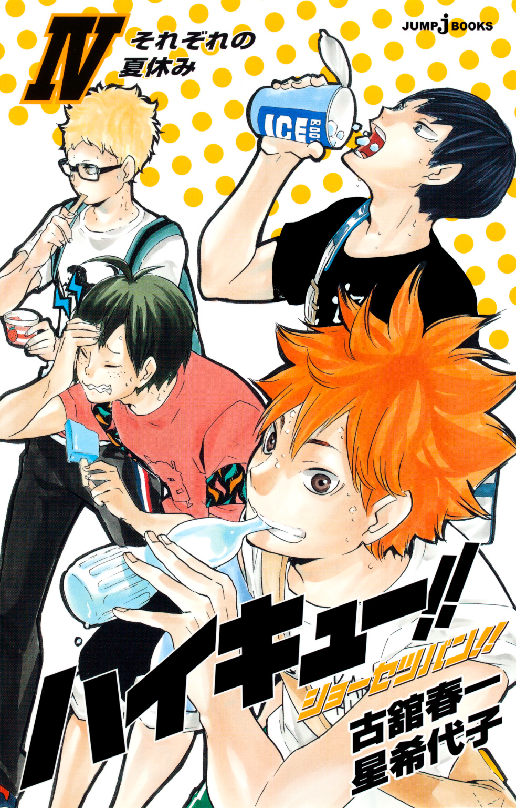
この本は縦書きでレイアウトされています。
また、ご覧になる機種により、表示の差が認められることがあります。
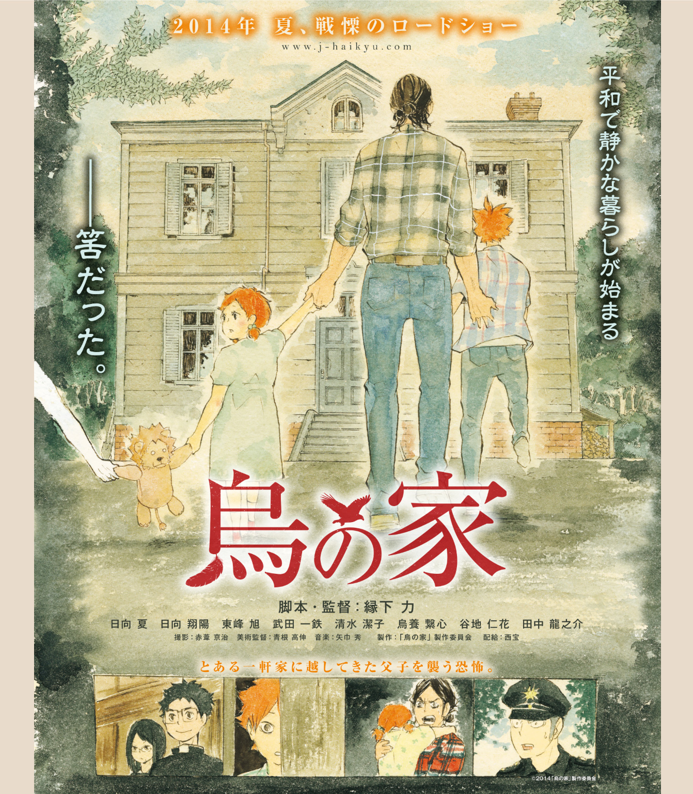
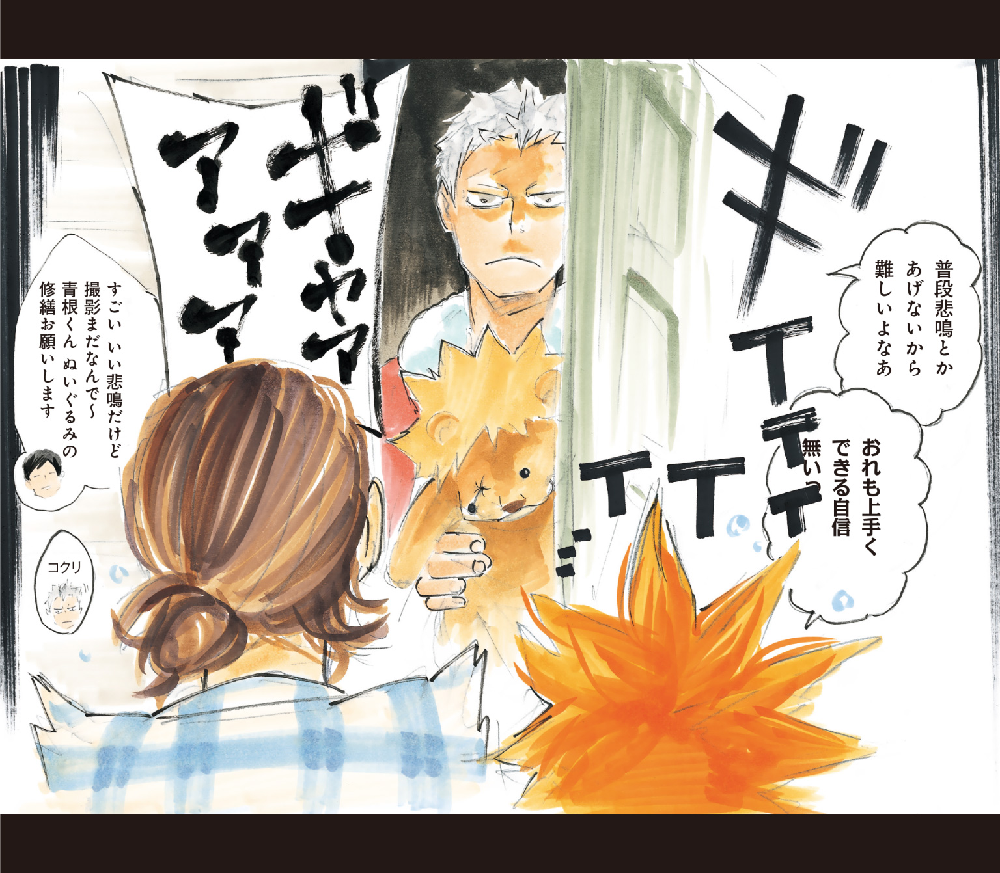
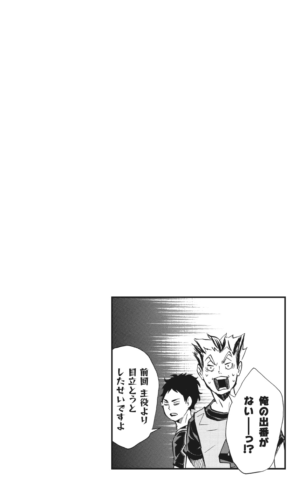
この作品はフィクションです。
実在の人物・団体・事件などにはいっさい関係ありません。
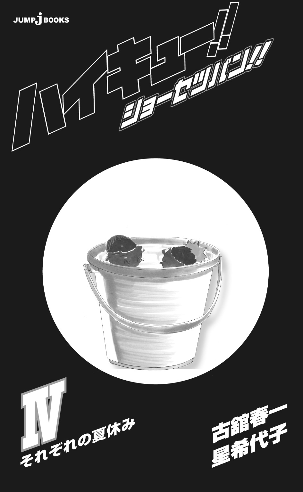
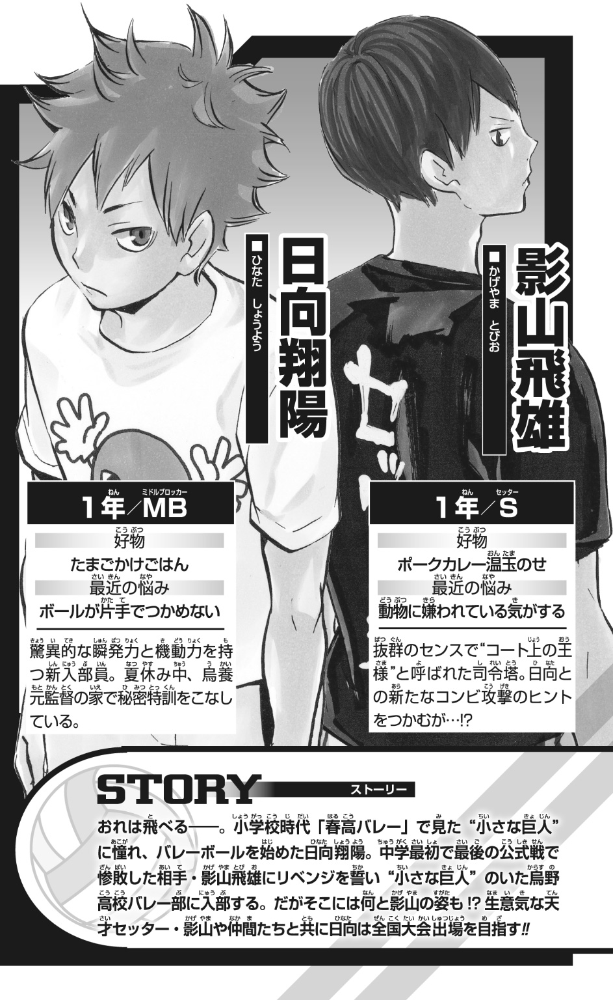
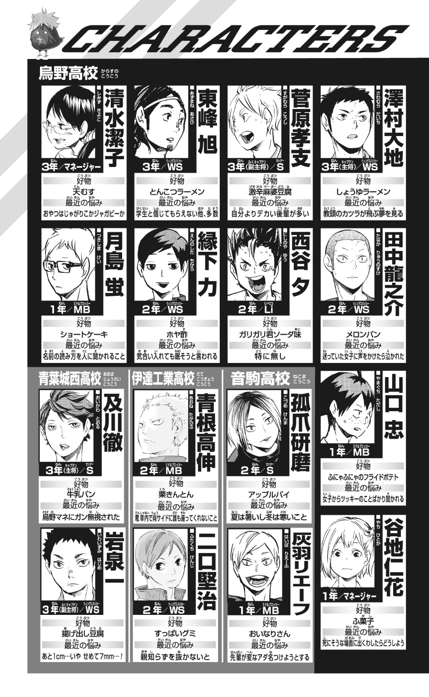
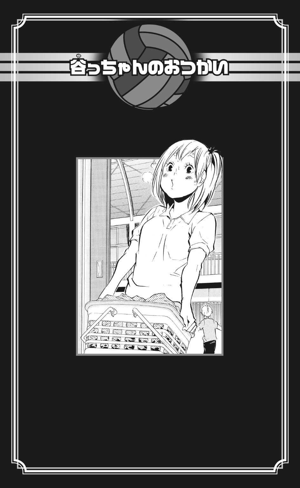
第二体育館の扉は、わずかな風を求めて開け放たれていた。さっきまで西陽が赤々と差していたが、陽が落ちて虫の音が聞こえはじめると、いくらかすごしやすくなったようだ。体育館の中で声を上げつづけている彼らに、そのわずかな気温の差が伝わっているとも思えないが――
「ラスト30本ッ！」
「おス!!」
振り絞るような部員たちの声に続いて、床を打つボールの音、落ちた汗にシューズの鳴る音が扉から漏れてくる。
全日本バレーボール高等学校選手権大会――春高の一次予選を突破した烏野高校排球部の部員たちは、暑さにあえぎながらも毎日体育館で走り、跳びつづけていた。秋には宮城県代表決定戦が行われる。彼らには、夏休みだからといって海だ旅行だと遊んでいるような時間はないのだった。
練習終了のホイッスルが鳴ると同時に、マネージャーの谷地が体育館に駆けこんできた。手にはスポーツドリンクのボトルを抱えている。
「みなさん、お疲れさまデス!!」
元気に声をかけて入ってきた谷地のあとに、３年生マネージャーの清水が冷たく絞ったタオルを持って続いた。
「おう、谷っちゃん、こっちも！」
「ツメテー！ 生き返るぜーッ！」
汗だくの部員たちがマネージャーふたりに群がり、そこで力つきたように倒れこむ。そのまま床に溶けてしまいそうな部員たちだったが、それでもマネージャーに感謝することを忘れない。
「タオルもドリンクも冷え冷えで気持ちいいや、ありがと！」
「気が利くねえ、谷っちゃん」
部員たちの言葉に、谷地が「イエイエイエイエ！」とあわてて首を振った。
「あの、清水先輩が、冷たいほうがいいからって！ で、急いで作ってきました！」
「おおおおお！ さすが我らが潔子さん！！！！！」
転がっていたはずの田中と西谷が急に力を得て立ち上がったのを横目に、主将の澤村が汗を拭きながらつぶやいた。
「まったく暑苦しいやつらだな......。アイスでも食って帰るか」
「お、いいね。大地のおごり？」
なにげない菅原の言葉を聞き逃さず、下級生たちがパッと立ち上がって元気に声を揃える。
「大地さん、アザース!!」
「なっ......！ スガ、おまえ余計なことを......！」
「ゴチになります！」
両手を合わせておどけた菅原をにらむ澤村に、谷地も思わず笑った。

着替えを終え、おごりだおごりだ、アイス祭りだ！ とはしゃぎながら部室を出てきた部員たちを見て、谷地が聞いた。
「あれ、日向は？」
最後に階段を下りてきた山口が答える。
「自主練するって言って先に帰ったけど。あの、ほら、烏養元監督んとこ」
その山口を見て、谷地はなぜか驚いた顔をした。そして困ったように体育館の中を指さす。
「タオルとかそのままだから、忘れないようにって言おうと思ってたのに......」
体育館のすみには、無造作に置かれたタオルとサポーターがあった。日向のものだ。
「忘れ物......。このままでは、腐海になってしまう......！」
谷地はやけに神妙な顔で体育館に入ってタオルとサポーターを手に取ると「よし！」とうなずいた。
「私、日向のとこ届けにいくから、みんなに言っといて！」
そう言ってスニーカーを履き直した谷地は「え、あ、うん」とあわてる山口に手を振って、キョロキョロと辺りを見まわした。そして駐車場へ向かう烏養コーチを見つけると、パタパタと駆けだした。
「すいませーん、コーチ！ あの、元監督さんのお家って、どこにあるか教えてもらってもいいですか？」
手を振って走ってくる谷地に気づき、烏養が車の前で立ち止まった。
「へ？ ああ、かまわないけど、何の用だ？ 行って面白いところじゃねーぞ？」
「日向が忘れ物したので、これ」
谷地が持つタオルとサポーターを見て合点のいった顔をすると、烏養はポケットを探ってくしゃくしゃのレシートとボールペンを出し、さらさらと地図を描いた。
「ん、これでわかると思うけど......。なんなら俺が持ってくぞ、車だし」
「イエ！ ダイジョーブです!! これもマネージャーの仕事なので！」
ビシッと敬礼までしてみせる谷地の勢いに押されて、烏養は「そ、そうか？ 気をつけろよ」と言うしかなかった。そして、再びパタパタと戻っていく谷地の背中で揺れるリュックをぼんやりと見ながら、煙草を出してくわえた。青暗い夜の駐車場にジワリと赤い火がともる。
「......べつに、明日でもいいだろうになあ」
「よし、行くぞ！」
部室で見つけた紙袋に日向の忘れ物を詰めた谷地は、校門に立って烏養にもらった地図を見ようとした。その谷地のすぐ隣に軽自動車がやってきて停まり、谷地の制服のスカートがふわりと揺れる。
「あ、コーチ」
運転席で煙草をくわえた烏養と目が合う。しかし烏養は軽く手をあげただけで、サッと左右を確認すると慣れた手つきでハンドルを切った。谷地も軽く会釈をする。そして、へえ、ハンドルってあんなにいっぱいグルグル回さなきゃいけないんだなーと、ぼんやり運転席を見ていた。車は谷地のすぐ脇を通りすぎ、そのまま小さくエンジン音を立てて坂を下りていったのだった。
かすかに排気ガスをたなびかせながら消えていく車にもう一度ペコリを頭を下げると、谷地は「えーと」とふたたび地図を見た。
そして、少々顔色を変える。
「......え？ これ、まず、学校どこ？」
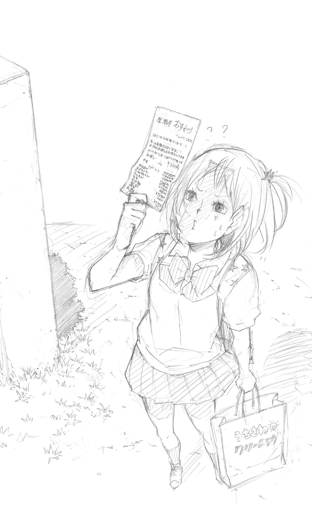
レシートの裏に描かれた地図に、現在地は記されていなかった。乱暴な地図だけど、よく見れば一応読めるかな？ あれ、逆さかな？ うーん、透かせば見えるかな？ と、谷地はクルクルと地図の天地を逆にしてみたり光にかざしてみたりしていたが、見れば見るほど使えないとわかるだけだった。
「あぶり出し......じゃないよね、さすがに」
その地図からわかることといえば、ぐにゃぐにゃとしたボールペンの線が道路で、その線の両端のどちらかが学校、どちらかが元監督の家なのだろうということだけ。そして、道路らしき線の途中には「たしかここらへんポスト」「ゆるい坂」「赤いジープの家」などの言葉が申し訳程度に添えられていた。
「赤い、ジープ......」
谷地は、困惑したままつぶやいた。
「コーチ、車とか......動くものは目印にならないです......」
しばし放心していた谷地だったが、すぐに気を取り直して歩道へ出た。坂ノ下商店に行けばお店の人に聞けると気づいたのだ。日向の忘れ物が入った紙袋をギュッと持ち直すと、谷地は坂ノ下商店へ急いだ。まだそれほど遅くはないが、ゆっくりしていたら晩ごはんの時間に間に合わないかもしれない。
コーチの地図にはちょっと面くらったけど、でもそれも含めて谷地はどこかわくわくする気持ちを隠せなかった。知らない家を探しにいくなんて冒険みたいだし、元監督さんがどんな人なのかも気になる。子供がいっぱい来てるっていうから、きっといい人なんだろうし、なんだか楽しそう。なにより日向のビックリする顔も楽しみだった。
夏の宵、谷地はリュックの中で筆箱をカタコト鳴らしながら、ゆるやかな坂を下りていった。
「あれ？」
坂ノ下商店の明かりが見えてくると、谷地は小さく声をあげた。店の自動販売機の前に影山がいたのだ。他の部員たちは見当たらない、中にいるのだろうか。
「おーい、影山君、みんなは？」
息を切らしてやってきた谷地に気づいた影山が、パンをくわえたまま顔を上げる。そしてあわてる様子もなくもぐもぐとパンを飲みこむと、走ってきたせいで全開になったおでこをかくそうと、前髪を直す谷地を見下ろして言った。
「ガリガリ君売りきれてて、嶋田マートまで行った」
「へ？ あ、西谷さん、そんなにもガリガリ君が......。で、影山君は？」
「俺は、腹減ってたから」
そう言ってパンにかじりつく影山を見上げて、谷地はあきれた顔をした。
「そんな、クールな一匹狼してないで、いっしょに行けばいいのに！」
「は？ 俺はここでパン食いたかっただけだけど？」
パンをほおばったまま不思議そうな顔をしている影山を見て「え、なんでって......、なんでだろ。なんでかな。せっかくおごってくれるっていうから......じゃなくて、先輩たちのカバン持ち......でもなくて、うーん......」と首を傾げていた谷地だったが、ふと我に返って聞く。
「じゃなくて！ あのさ、影山君、日向が行ってる烏養元監督の家って知ってる？」
「ああ、行ったことあるけど」
谷地の顔が輝く。
「ラッキー、助かった！ 届け物があるんだけど道わかんなくて、お店の人に聞こうと思ってたんだ。悪いけど、道案内お願いしてもいいかな？」
「......べつに、いいけど」
そう言うと、影山は食べ終わったパンの袋をゴミ箱に投げ入れて、地面に置いていたスポーツバッグを手にした。
１８０センチを少し超える影山と１５０センチに少し満たない谷地が、どこかぎこちなく坂を下りていく。自分のペースでさっさと歩いていく影山を小走りで追いかけながら谷地が言った。
「地図なんだから、現在地と目的地くらい明記すべきだよね！ 目印も、赤いジープとかちょっと想定外すぎだよ......」
「ん、そうか？ 目立つだろ、赤いし」
すたすたと歩きながら気のない様子で応えた影山に驚き、谷地は思わず足を止めた。
「だ、だって......車、動くでショ！ いつもそこにいるとは限んないんだよ！」
「え？ ああ、そうか」
「同じタイプ......」
どんどん歩いていく影山の背中をあきれて見ていると、前を行くその頭がヒョイッと振り向いた。驚いて思わず身構えた谷地に、影山が聞く。
「で、何を届けるんだ？」
谷地は「あ、そうだった」と、紙袋を見せた。
「これ、日向の忘れ物」
そう言った途端に影山の顔が険しくなる。
「なんで俺があいつのヘマのためにわざわざ......」
眉間にギュッとしわを寄せた影山の眼光に、谷地は内心、狩られるのでは！ と、怯えながら頭を下げた。
「ご、ゴメン！ なんか、私まだ清水先輩みたいに気が利かないから、ちょっとでもみんなの役に立ちたいと思って！ でも、逆に影山君に迷惑かけてしまったし、やればやるだけ裏目に...。もがくほど落ちていくアリ地獄人生だよ...。うー、私のバカ！ オケラ！」
「......おけら？」
目の前でジタバタする谷地をじっと見ていた影山が、ポツリと言った。
「マネージャーの仕事なら、しかたないな」
「え？」
谷地が顔を上げると、影山は再びさっさと歩きだした。
「腹減ったから、早く行くぞ」
「......え、今パン食べたとこだよね？」
頼りない街灯がふたりを照らし、舗道に影をつくる。谷地の冒険がようやくスタートを切ったように見えた。
しばらくの間、先を行く影山を追って歩いていた谷地だったが、いつからか、どうも影山がキョロキョロと落ち着かずに辺りを見まわしていることに気づいていた。もしや影山もうろ覚えなのでは？ と心配になったが、でも「道わかってる？」と聞く勇気もなかった。もし「スマン」と謝られでもしたら、どうしたらいいのだ。
そんな疑いの目で見知らぬ町並みを見てみると、どうにも道に迷っている気しかしてこない。紙袋を持つ手に汗がにじみ、さっきまでの冒険気分など、もうすっかりどこかへ消えてしまっていた。不安のあまり、小さいころ、知らない道を歩いたら人さらいに連れていかれると脅されたことまで思い出す始末だった。
――あれ、人さらいじゃなくて神隠しに遭うんだっけ。宇宙人？ キャトル......ミューティレーション？
いやいや、まさか神隠しとか宇宙人とか信じてるわけじゃないけど。私だってそりゃあ小さいけどもう子供じゃないし、そんな作り話で怖がってる場合じゃないんデスよ。それに今はひとりじゃなくて、影山君もいるし――
そう自分に言い聞かせながらも、道ばたの草むらで何か黒い影が動いた気がして背筋がぴーんと伸びる。
「も、もしや宇宙人......!?」
妄想が妄想を呼ぶ。もう谷地には、地図を見返して首をひねる影山を黙って見ている心の余裕はなかった。谷地は真っ青な顔で覚悟を決めると、できるだけなにげないふうを装って声をかけてみた。
「あ、えーと、あの......影山君さ、この道、っていうか、あの、コーチの描いてたポストって、まだ、あの、出てこないよね？」
「......あァ？」
振り返った影山の顔も汗ばんでいて同じく余裕はなく、どこか目の焦点が合っていない。ヤバイ、図星を突いてしまった！ と、谷地はあわてて両手と首をブルンブルン振った。
「イヤ！ あの、違うって！ 疑ってるわけじゃなくて！ あの、だから......！」
「あ」
そのとき、宙をさまよっていた影山の視線がフイッと動いた。さっきまでの死んだ目と違って、表情にかすかに希望の光が見える。
「え、もしかして道わかったとか!?」
谷地が思わず声をあげると、影山は得意げに車道を行く車を指さして駆けだした。
「いたぞ、赤いジープだ！」
「え!? ちょ......待っ......、なに言ってるの!? ちょっと待って！ 影山君、速いから！ こんなとこに置いてかないでえええ!!」
谷地の叫びもむなしく、影山は車を追って走りつづける。
「あれを追えば、正しい道に出るぞ！ 逃がしたら、また迷うからな！」
あ、やっぱり迷ってたんだ！ と思いながら、谷地が追う。
「ちょっと影山君！ 家に帰るんじゃなくて、どっか行くとこかもしれないし！ そもそも、その車かどうかわかんないし！」
必死に影山を追う谷地だったが、アスファルトのくぼみに足を取られてバタンと転んでしまう。
「い、いたい......、いや、置いてかれる......！」
地面に手をついたまま呆然とする谷地の前に、１台の白いバンが停まった。なんの変哲もない、よく見かける車だが、知り合いの車ではない。恐怖に身を固くした谷地のそばに、運転席から男が降りてくる。
「え？ だ、だれ......？」
あわてる谷地の脳裏に「誘拐犯はいかにも悪そうな目立つ車など使わない。普通の、どこにでもある車を使うものだ」というどこかで読んだ言葉が浮かぶ。
「......ひ、人さらいーッ！」
「なんだとッ？」
谷地の声に、さすがの影山も足を止めて戻ってくる。
その間にも、震える谷地の前に男が立ちはだかり、街灯の明かりを遮る。
「お、おかあさぁん......」
涙を浮かべた谷地に、逆光で顔の見えない男がすっと手を差し出して言った。
「おい、こんなとこで何やってんだ？ 烏野の子だろ？」
「へ？」
隣に停まった車のボディには「滝ノ上電気店」の文字――降りてきた男はバレー部ＯＢの滝ノ上だった。
「た、滝ノ上さん......!?」
気が抜けてふにゃっと泣き顔になった谷地に気づき、滝ノ上が驚く。
「な、なんで泣いてんだ？ 影山、おまえ何したんだよ!?」
戻ってきた影山が、驚いた顔をする。
「え、俺はただ赤いジープを追いかけて......」
「ジープ？」
影山の言葉に、滝ノ上が眉をひそめた。谷地があたふたと説明する。
「あの、私たち烏養元監督のお家を探してる途中で......」
「はァ!? 烏養さんの家って......ぜんぜん方向違うぞ？ おまえたち、どこから来たんだ？」
「が、学校......です」
恐怖と緊張で疲れきった谷地の顔を見て、滝ノ上があきれた。
「一山越えてんじゃねえか、なにやってんだ......」
「え!?」
３人を照らす街灯に張りついていた蛾が、大きく羽ばたいて夜空へ消えていった。
「あー、そりゃあいつに聞いたのが間違いだ」
ハンドルを持った滝ノ上が苦笑いしながら言った。滝ノ上の車は、これまでふたりが歩いていた住宅地とはまったく違う、田園風景の中を進んでいる。
助手席の谷地が声をひそめて聞き返す。
「そ、そうなんですか？」
「烏養は......、爺さん家は子供の頃から通い慣れすぎて、道順とか目印とか、そういうこと何も考えずにただ体が動くにまかせて通ってる感じだろうからな」
「あ、部活のとき、西谷さんや影山君が『スッ！』とか『サッ！』とか『ガッ！』とか、そういう説明しかできないのと同じですね！」
「そういうやつらに教わる後輩も気の毒だな」
滝ノ上がそう言ってハンドルを切った。車が砂利道に入り、谷地のサイドで結んだ髪がピョコピョコと揺れる。
「......ほら、見えてきたぞ」
滝ノ上の言葉に前を見ると、ヘッドライトに照らされた畑の中に、広そうな２階建ての家と生け垣が見えてきた。
「ここが......」
谷地が窓に手をついて外を眺めると、これまで後部座席で黙りこんでいた影山がやっと口を開いた。
「あ、知ってる。ここだ」
「影山君、ここに着くまでわかってなかったんだね......」
谷地が疲れた笑顔を見せると、車が停まった。
「す、すいませーん。......ん？」
門をくぐった谷地の足元にボールがひとつ転がってきた。ちょっとかがんでボールを拾うと、谷地が首を傾げる。
「白いボール......。練習用、かな？」
「ああ、それは昔のボールだよ」
後ろからついてきた滝ノ上が谷地からボールを受け取って言う。
「俺たちの頃は、この白いボールだったんだ。最近のはなんつーかカラフルだよな。回転がわかっていいんだけど」
影山も、後ろでうなずいている。谷地は「へえ」と珍しそうに白いボールを見ていたが、すぐそばに停められた日向の自転車に気づくと、広い庭に張られたネットに目を移す。
「いた、日向だ！」
日向は、大学生くらいの女性を相手に速攻の練習をしていた。ネットの向こう側には、中学生くらいに見える男子が数人立っている。こちらに背を向けている日向は、まだ谷地と影山が来たことに気づいていないようだった。
女性の声が聞こえる。
「翔くん、そろそろこのへんにしとかない？」
「あの、もう１本！ もう１本だけ！」
女性は苦笑すると「これで最後だよ」とトスを上げ、日向が跳んだ。
谷地が「日向らしいね」と笑って後ろの影山を見ると、影山は身を乗り出し、あからさまに目を輝かせてウズウズとしているのだった。合宿で、バーベキューを前にしたときと同じ顔だ。
「......そんなにやりたいなら、影山君もいっしょに練習してきたら？」
「そ、そうか？ いや、でも......」
影山はパッとうれしそうな顔になりながらも、らしくない遠慮をしている。谷地はちょっと笑うと日向に手を振った。
「おーい、日向ー！」
ボールを打ち抜いた日向が、振り向いて驚く。
「え、谷地さん!? 影山も!! なんで!?」
「影山君が、仲間に入れてほしいって！」
「なッ、俺はべつに！」
ムキになる影山だったが、日向が「おう！ 来いよ！」と手を上げると、カバンを投げ捨てて一目散にネットへ駆け寄っていった。その速さに、谷地が驚く。
「うわ、は、速い！ ......でも、あのふたり、本当にバレーボールが好きなんだな。なんか、そういうのって、いいな」
さっそくトスを上げる影山、そしてイキイキと跳ぶ日向の速攻を見て、年下の子供たちがドッと沸く。
「スゲー！ ショーチャン、スゲー！」
「バカ、あのデカイほうがすごいんだってコーチが言ってた」
「どっちもスゲー!!」
盛り上がる子供たちを見て、谷地は思った。この子たちも、日向たちみたいになるのかな。私もいつか、こんなふうに好きなものとかできるのかな。
日向たちを見ていた谷地のまわりに、いつの間にか子供たちが集まってきていた。谷地はあわてて挨拶する。
「あ、こんにちは！ お邪魔してます！」
子供たちはジーッと谷地を観察していたが、急にケタケタ笑いながら聞いてきた。
「ねえ、彼女？ 彼女？ ねえ、どっちの彼女なの？」
「え!? ち、ちが......、キミたち何を...... 」
」
囃し立てる子供たちを追いかけだした谷地をチラリと見て、日向が感心する。
「谷地さん、子供と仲良くなるの早いなー。勉強教えるのも上手だったしさ、先生とか向いてるんじゃないかなあ。影山もそう思うだろ？」
「他人のことより、今は自分の練習だろうが。全国に行くには、もう１試合だって負けられないんだぞ」
「わ、わかってるよ！ うっさいな、もう！」
そのときスーパーマーケットの袋を持った、日向たちの母親くらいの年齢に見える女性がやってきた。そして縁側にいた烏養元監督のところへ行くと、慣れた様子で話をはじめる。
「あ、私も元監督さんにご挨拶してこなきゃ！」
谷地があわてて駆けだし、滝ノ上と子供たちもついていく。
「あの、私、烏野高校バレー部のマネージャーで、谷地といいます！」
緊張しながら頭を下げた谷地を見て、元監督がニヤリと笑った。
「ほう、あいつらの子守りか。暑い中、ご苦労だな」
「い、いえ！ そういうわけでは!!」
谷地があわてると、女性がニッと笑って買い物袋を差し出した。
「これ、パート先でもらったのよ、冷凍庫に入りきらないからお裾分け。ほら、食べて、食べて、溶けちゃうから！」
「うわ......アイス祭りだ！」
谷地の言葉に、他の子供たちも飛んでくる。
「アイス!? アイス!?」
「ガリガリ君ある？」
「俺、チョコのやつ、チョコのやつ取って！」
群がった子供たちに溺れそうになりながら、谷地が手を振る。
「日向も影山君も、ちょっと休んでいっしょにいただこう！」
「おう」
影山もボールを持ったまま縁側へ向かい、日向が「待てよ」と追いかける。
「偉そうなこと言って、自分は練習よりアイスですか！」
ニヤニヤ笑って小突いてくる日向を一瞥して、影山が言った。
「......水分補給だ」
「じゃあ影山クンはアイスじゃなくて水道水ですな！」
「黙れ！」
またケンカしているふたりを見て、谷地が困ったように笑った。そして溶けかけたアイスで指を汚しながら「そういえば、今、夏休みなんだっけ」と空を見上げる。
雲のない夜空に月が浮かび、草むらからは虫の音が聞こえる。ステテコ姿の烏養元監督がうちわを片手に腰かける縁側で、蚊取り線香の煙が細く白く立ち上っている。はげしい練習の毎日ですっかり忘れていたが、世間は夏休みの真っ最中なのだった。
「すっかり遅くなっちゃったね。ゴメン、つき合わせちゃって！」
自転車をこぎながら叫ぶ日向に、谷地が車の窓から顔を出して言う。
「ううん、私が勝手に来たんだし！ すごい楽しかった！」
すっかり夜も深まった山道を、谷地と影山のふたりが滝ノ上の車で帰っていくところだった。その隣を日向の自転車が並走している。
影山は、窓ガラスにゴツンゴツンと頭をぶつけながらぐっすり眠っていた。その寝顔を窓越しに見て、日向があきれる。
「すぐ寝るんだ、こいつは。冴子姉さんの車でもずっと寝てたし。......まさか、寝る子は育つとはこのことか！ こいつの身長は、睡眠中に伸びているのか......!!」
ハッと顔色を変えた日向を見て、谷地が残念そうに言う。
「私もよく寝てるけどダメだ」
「そうか......」
「おまえら、バカだなー」
ハンドルを握る滝ノ上が、あきれたように笑った。
交差点で停まった日向が、ふたりに手を振る。
「おれこっちだから、じゃーな！ また明日！」
「また明日ね！」
「気ィつけろよー」
谷地と滝ノ上も手を振る。影山はまだ眠っている。すっかり涼しくなった夜道、バレー部の１年生選手とマネージャーは、やっとそれぞれの家路へついたのだった。
「仁花、あんたね、頑張ってるのはわかるけど、遅くなるなら連絡くらいできるわよね。報告、連絡、相談は社会生活において最低限の責任でしょう」
すっかり遅くなって家に帰った谷地は夕飯の時間に間に合わず、帰ったとたん母親に叱られたのだった。玄関に立ったまましょげ返る谷地の前で、仁王立ちになっていた母親が、ふと顔をしかめた。
「......それに、なんか今日すごい汗くさいわよ？」
「え、私が!? あ......！」
谷地は、ようやく右手に握りしめていた紙袋に気づいた。それは、日向の忘れ物――タオルとサポーターの入った紙袋だった。
「こ、これを、届けにいったのに......！ うー、私のバカ！ オケラ！」
「は？ オケラ？ また訳のわからないことを......。いいから手を洗ってごはんになさい。私が作ったから、味は保証しないからね！」
「はぁい......」
すっかり落ちこんだ谷地は靴を脱ぎ、洗面台へ向かう。
「あ、これ、洗わなきゃ......」
そう言って、ため息まじりに紙袋の中を見た。くたびれたタオルとサポーターは、嫌でも体育館を思い出させた。何度も何度も失敗しながら速攻の練習をしていた日向と影山、新しい技を身につけるために日々練習している部員たちの姿を......。
谷地は、顔を上げると洗面台の鏡を見た。
「......うー、負けない！ いつか私も気の利くマネージャーになる！」
「コラ、大きな声出さないの！」
台所から聞こえた母親の声に応えて、谷地は大きな声で言った。
「あス!!」
烏の家 第１怪
「こんないいお天気に、オバケなんて出るわけないよ」
山深くさみしい道を、古いステーションワゴンが走る。助手席に少年が眠り、後部座席ではぬいぐるみを持った女児が窓から外を見ていた。兄妹なのだろう。どこか頼りなさそうな父親がハンドルを切り、車は舗装もされていない細い道に入った。娘が振動に体を揺らして笑う。しばらく砂利道を進むと父親が言った。
「翔陽、起きろ。着いたぞ。今日からここが俺たち３人の家だ」
兄の翔陽が寝ぼけ眼で外を見た。そこには山の中とは思えない、豪華な洋館がそびえ立っている。
「すごい！ おおきい！ お城みたい！」
そう言って車を飛び出した妹を追いかけようとして、兄はふと目をとめた。屋根裏部屋の窓に、人影が映った気がしたのだ。父親は兄の視線に気づくと、館をチラリと見て言った。
「な、なんだ？ 管理人さんかな......。翔陽、夏と挨拶してきなよ。ほら、父さん車庫に車を停めてくるから」
「父さん、怖いんだね......」
気の進まない様子で車を降りた兄は、興奮して走りまわる妹をつかまえていっしょに洋館へ足を踏み入れた。
「おじゃま、します......」
おそるおそる暗いリビングに入ってカーテンを開けると、大きな窓から荒れ果てた庭が見えた。陽の光で、壁に肖像画や写真が掛けられていることもわかる。前の住人だろうか。妹がその中のひとつを指さした。
「あのお姉ちゃん、逃げたそうな顔してる」
少女の肖像画は、確かに「出して！」と言っているような泣き顔だ。ふたりは顔を見合わせて肩をすくめると、薄暗い階段をのぼった。２階を通り過ぎ、屋根裏部屋のドアを開ける。
「すいませーん、......あれ、だれもいない」
「お兄ちゃん、あそこ、なんかいる」
妹が壁の割れ目を指さし、そろそろと歩いていく。
「おい、夏、勝手に......」
兄の言葉も聞かず、妹はすき間を覗きこんだ。瞬間、その穴から真っ黒い闇が飛び出し、広がる。
「う、うわあああああ！ おにいぢゃああああああん」
屋根裏部屋に広がる闇。よく見ると、それは黒い鳥――カラスのヒナの群れなのだった。
「カ、カラス!? なんで......」
兄が立ち尽くす隣で、妹が「つかまえた！」と、両手を合わせた。
しかし、手を開けてみると中にヒナガラスはおらず、ただ手のひらが黒く汚れているだけだった。
「いなくなっちゃった」
「あんなにいたのに、もう１羽もいない。どこにいったんだ......」
ふたりは空っぽの屋根裏部屋を出ると父親にカラスの話をしたが、父親は耳をふさぐのだった。
「こ、こんないいお天気に、オバケなんて出るわけないだろ？ きっと......ほら、埃の塊だよ！」
「ちがうもん！」
ふくれる妹の後ろで、兄はふたたび屋根裏部屋を見上げた。今度は確かに視線を感じたのだ――。
〈続〉
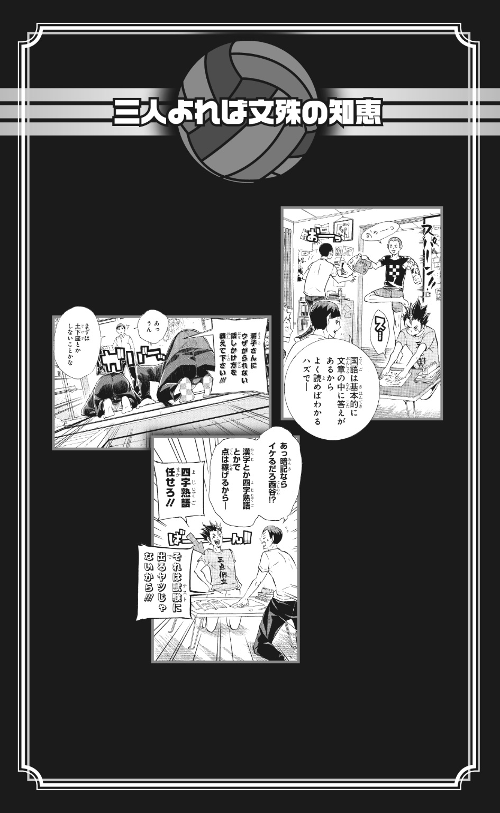
セミがうるさい。そんなの真夏だから当然だろうし、セミに文句を言うのもバカみたいだけど、やっぱりうるさい。こんなにうるさいのに、木を見てもなかなかセミの姿が見つけられないところも気に入らない。なんというか感情の持って行き場がなくて困る。
縁下はまだ朝も早いというのに次から次へと波のように寄せてくるセミの声に辟易しながら、部室への階段を上っていた。
「うーす」
部室の扉を開け、いつものように挨拶する。なんということもない普段どおりの一連の動き。しかし、縁下の目に飛びこんできたのは見慣れぬ光景だった。
「セミがうるせえな」
「１週間で死んでしまう運命には同情する。しかし確かにうるせえ」
ロッカーの並ぶ部室の中央、見慣れぬちゃぶ台に向かってダラリと座り、外のセミに文句を言っているのは田中と西谷だ。そのちゃぶ台がどこから持ってきたものかはわからないが、その上に置かれているものが何なのかはチラリと見ただけでわかる。あの紙の束は、夏休みの課題だ。
縁下は一瞬でそれらを確認すると部室に入るのをやめ、何も言わずにパタンと扉を閉めた。が、その扉はすぐに中から開かれる。
「おいコラ、縁下！ なぜ逃げる！」
田中の坊主頭が出てきて猛犬のように嚙みついてくる。そして部室の中では、さっきまでとはうって変わってピンと背筋を伸ばした西谷がプリントに向かっている。西谷はキリッと真剣な顔を上げると言った。
「どうしました、力さん。俺たちは、真面目に夏休みの課題をやってるだけデスよ？」
「なんで敬語なんだよ、胡散臭い。どうせ俺に手伝わせる気だろ、まったく......」
忌々しげに言い放った縁下を見て、田中が大仰におののく。
「な、なぜバレた......！」
「あのな、これ見よがしに部室で勉強して、見え見えなんだよ。いいか、俺は絶対に手伝わないからな。自分たちで勝手にやれよ」
そう言ってスニーカーを脱ぐ縁下の肩を、田中がすれ違いざまにやさしく叩いた。
「......なんだよ」
「そんな悲しいこと言うなよ縁下。バレーボールはチームプレーだろ？ 繫ごうぜ、ボールを」
「ああ、そこにリベロがいるだろ。どんなボールも拾ってくれるウチの守護神だぞ」
縁下が指さした先で、西谷がうれしそうに胸を張る。
「おう！ ボールは俺にまかせとけ！」
「ノヤっさん......」
「ん？ どうした？ あれ？ 俺、何の話してたんだ」
西谷が首を傾げているすきにロッカーからシューズを取り出すと、縁下はさっさと部室を出て階段を下りた。
「危なかった......」
あのふたりに巻きこまれると、どう転んでも面倒なことになるのだ。こういうときは、とにかく関わらないに限る。下手に話したりすると、結局あいつらのペースにはまって抜け出せなくなるからな......。
閉めた部室の扉から、ふたりの声が聞こえてくる。
「失敗か！」
「いや、まだ次がある！」
朝から焼けつくような太陽の下、縁下は足取り重く体育館へ向かった。
「せめて、俺に聞こえないように言えよな......」
夏休みはつらい。連日、早朝から夜まで１日中部活なのだから、暑い昼間は授業があったほうがまだマシというものだった。バレーボールはもちろん好きだし、今はべつに部活が嫌なわけじゃないけれど、単純に体がキツい。とくに体育館という建物は、なぜだか夏はゆだりそうなほど暑くて、冬は凍えそうなほど寒くなるものなのだ。
「暑っつ......」
スパイクの練習中、額の汗を拭った縁下の後ろで、田中が雄叫びを上げながら汗に濡れたシャツを脱いだ。
「アッヂイイイイイイイイッ！」
ネットの前でトスを上げていた菅原が、チラリと見て苦笑するほどの声だ。スパイクの順番を待つ縁下が振り返る。
「脱ぐなよ田中、余計に暑苦しくなる」
「......縁下よ、一度脱いだシャツを着ろと言うのか？ おまえは汗で肌に張りつくシャツをふたたび着ろと、そう言うのか!?」
濡れたシャツを掲げて寄ってくる田中に、縁下がピシャリと言う。
「それ、近づけるなよ。汚いだろ」
「なッ......！」
大げさにのけぞった田中だったが、急にスッとやさしい目をすると言った。
「さっきも思ったんだが、縁下よ......。おまえ、もしや反抗期なのでは？」
「......その菩薩面、うざいからヤメレ」
そう言って顔をそむけると、縁下の番がきた。菅原のトスが上がる。縁下は軽く助走をつけて両足で踏みこむと、全体重を乗せて打ちぬいた。
――なにが反抗期だよ！
強烈なスパイクがコートに突き刺さる。縁下の力強いスパイクを見て、澤村がうれしそうな顔をした。
「お、縁下のやつ、なんか迫力出てきたなあ」
１日の練習が終わった。部員たちはとっぷり暮れた空の下で「じゃあな」と手を振り合っていた。ひとりでさっさと帰る者もいれば、連れ立ってどこかへ立ち寄る相談をしている者もいる。このあとさらに自主練習に向かう者も、どこにそんな元気が残っているのか、なぜか駆けだして帰る者もいる。
「なんか、腹減ったな」
縁下は何か軽く食べながら帰ろうと、坂ノ下商店に立ち寄ることにした。暑さのせいか、いつもよりも疲れた気がする。いや、もしかして田中の反抗期発言にイラついて、普段より力が入ってしまったのかもしれない。これじゃ本当に反抗期じゃないか、情けない......。
ひとつため息をついて店に入る。自動ドアが開いて顔を上げると、店内に先客の姿が見えた。縁下は思わず声をあげた。
「うわ！」
縁下が来るのを待っていたかのようにこちらを見ていたふたりの客は、もちろん田中と西谷だった。テーブルに向かうふたりの前には、朝と同じように課題のプリントが開かれている。
「おまえら、なんか走って帰ったと思ったら......」
あきれてつぶやく縁下に、田中が立ちあがって近づく。そして鷹揚に右手を差し出すと余裕の表情を見せた。
「友よ、来ると思ってたぜ！」
「ストーカーかよ。そこまで用意してるなら、さっさとやって終わらせればいいだろ。ぜんぜん手つけてないだろうが、それ」
田中の右手を無視してパンの棚へ向かった縁下に、西谷も立ちあがって声をかける。
「力！ 俺たちの夏には、おまえの助けが必要なんだ！」
「なんで自信満々なんだよ。おまえらさ、課題なら田中の姉さんに手伝ってもらえばいいだろ。なんで俺のところに来るんだよ」
縁下の言葉に、田中がサッと表情を曇らせた。
「......おい縁下、簡単に言ってくれるがな、あの姉に借りを作るってのがどれだけ恐ろしいことかわかってるのか？ こないだの合宿の件でも俺は......」
「いや、知りたくないから言わなくていい」
そう突き放して焼きそばパンを手に取る縁下に、田中が泣きつく。
「なんだよ、愚痴らせてくれよ！ 俺のつらく苦しい日々を！」
「おまえの家庭の事情なんか知るか。......あ、これください」
笑顔をつくってレジに焼きそばパンを出した縁下の後ろで、田中と西谷が素早く床に座りこんだ。そしておもむろに頭を下げる。
「俺たちには......縁下先生しかいないんだ！」
「師匠！」
床から真剣な目で見上げるふたりに、縁下が冷たく言い放った。
「......おまえたちの土下座、安いんだよ」
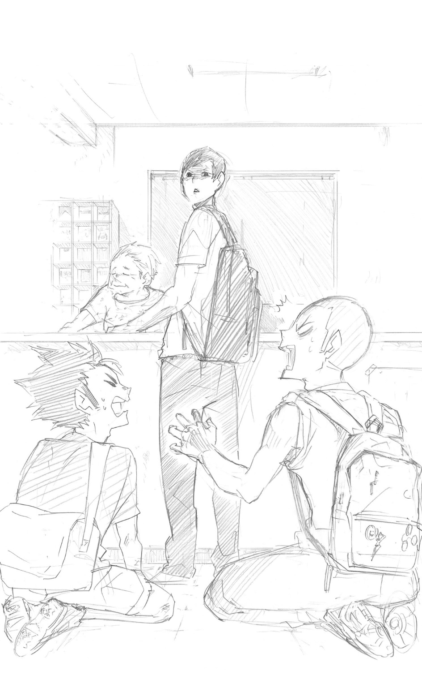
「な、なに！」
「辛口！」
ふたりは店を出ようとする縁下にあわててすがりつき、めげずに引き止める。
「待て、縁下！ わかった！ そこまで言うなら課題は自分でやろう。......しかし、おまえの家でだ！」
「なんで俺んち来るんだよ！ 手伝わないって言ってるだろ！」
ふたりを振り払おうとした縁下に、田中が真剣な表情で啖呵を切った。
「見損なうな！ 課題は自分の力でやると言ってるだろう！」
思いがけない田中の言葉に、縁下がぽかんと口を開けた。
「は？ じゃあなんで家に......」
「武士の情けだ、縁下よ、俺たちの挑戦を見守っていてくれ」
「......武士じゃなくて、高校生なんで。それじゃ」
なんとかこの場から逃げようとする縁下だが、田中も必死だ。
「おまえが必要なんだ！ 部活にだって、コーチや監督がいるだろ、縁下！」
「俺たちは、自分たちの手だけで課題という強敵に立ち向かうこの姿を、力、おまえという監督に見届けてほしいんだ！」
西谷も真っすぐな瞳で訴えかけてくる。
「み、右と左からワケのわからないことを......」
真剣勝負の合間、一瞬、勢いに押された縁下をふたりは見逃さなかった。今だ！ とばかりに揃って畳みかける。
「大きな壁に当たって砕ける俺たちの伝説を、後世へ語り継いでくれ！ 縁下監督！」
「俺たちの骨を拾ってくれ！ 力コーチ！」
勝手なことを言いながら迫ってくるふたりからなんとか逃げようとするうち、誰かの体がセンサーに触れた。ゆっくりと自動ドアが開く。外から熱い風が吹きこむ、と同時に光に誘われたのだろう、店の中に１匹のセミが飛びこんできた。
ジジジジジジジジジジジジジジジジジジ
「う、うわ」
「セミ怖え！」
「断末魔！」
３人揃って後ずさりつつも床で暴れるセミを見ているうち、縁下は気づいた。
「......そうか、もう手遅れだったんだな」
そう、朝、部室の扉を開けた瞬間から、縁下はふたりに巻きこまれていたのだ。どんなに逃げようと無視しようと、縁下はふたりの後手に回ってしまっていたのだ。どうすればよかったのか、それはわからない。もしかしたら、今朝からではなく、もっと前からとっくに手遅れだったのかもしれない。
どうしてこうなるんだろうか。縁下は自室のベッドに寝転がってバレーボール雑誌をめくりながら、悲愴な顔で課題に取り組む田中と西谷をチラリと見た。階下から持ってきた小さなちゃぶ台に、ふたり分のプリントや教科書類が重ねられている。夏休みは１か月近くもあるのに、ギリギリまで手つかずの課題を溜めこんでいるふたりの気持ちがわからない。
縁下は小さくあくびをした。疲れたし、さっさと風呂に入って寝たかったけれど、眠っている間に何をされるかわからない気がして、寝るわけにもいかない。課題を写させてくれとでも言われればすぐに追い返すのだが、宣言通り、自分たちで頑張っているから文句も言えない。
俺って、やっぱり意志が弱いんだろうか。部活も１回逃げ出したし、戻ってからコツコツやってきたつもりだけど、ずっと控えだしな......。
軽く落ちこんでいる縁下になど気づきもせず、田中と西谷は山のような課題に取り組んでいた。
「龍、助動詞って何のことかわかるか？」
「ん？ ノヤっさんは英語やってるのか。助動詞ってやつは、日本語にないから難しいよな」
聞き捨てならない言葉に、縁下が思わず口を挟む。
「日本語にもあるから。っていうか、西谷は中学校から英語やり直したほうがいいんじゃないのか？ それでよく高校受かったな」
「なに!? 中学の英語ぐらいわかるぞ！ ディスイズアッペーン！」
「ＯＨ！ リアリー!?」
ペンを掲げて騒ぎだすふたりに、縁下があきれはてた。
「今どき、コントでもそんなこと言わないからな」
できるだけ無視したいが、さっきからいちいちどこか危なっかしい会話が耳に入ってきて心配になる。こいつらだけにやらせてたら、きっと朝までかかっても終わらないんじゃないだろうか......。
とにかくさっさと終わらせて眠りたい一心で、縁下はふたりに聞いた。
「おい、１教科だけでも手伝おうか？」
その言葉に、ふたりがものすごい形相でにらみつけてくる。
「......はァ？」
「......なんだと？」
意外な反応に縁下が「え？」と息をのむと、ふたりが怒鳴る。
「いらん！ 男に二言はない！」
「手伝わないって言ったのは自分だろうが！ 貫けよ、自分を！」
「......わ、悪かったよ」
ふたりに真顔で叱りとばされた縁下は、ベッドに座ったまま謎の敗北感に包まれるのだった。
しかし夜は眠い。朝からずっと運動していたのだから当然のことだし、体を動かしていなくたって夜は眠るものだ。そして眠いのは縁下だけでなく、さすがの田中と西谷も同じなのだった。
「寝るな、龍！ 寝たらそこで試合終了だぞ!!」
白目をむいて化学のプリントによだれを垂らす田中を、西谷が必死に揺さぶっている。
「ぐ、むう......。ス、スマン、ノヤっさん。この周期表を埋めてたら意識が......」
「ん？ 何だこれ、暗号か？」
元素の周期表を手に首を傾げた西谷を見て、縁下が苦笑する。
「西谷は、授業に出てないのか？ いつも朝練のあと、どこ行ってるんだ？」
「そういえば、他に３組のやつって部活にいないよな。成田は４組だし、木下は２組か。ノヤっさん、ずっと体育館で練習してたりしないよな？」
田中もそう言って西谷に向き直ると、心配そうに続けた。
「朝練と放課後の間には授業ってのがあって、みんな勉強してるんだが......ノヤっさん知ってたか？」
「......お、おまえら。バカにするなーッ！」
真っ赤な顔をして立ち上がった西谷に、田中があわてて言い返す。
「バカにしてるんじゃなくて、純粋に心配だったんだよ！ 万が一ってことがあるだろ！」
「あるか!!」
「......おまえら、暴れてる暇あるなら課題をやろうな」
縁下が疲れきった顔でふたりを引き離した。そして机の上に置かれた目覚まし時計をチラリと見る。もう眠る支度をする時間だった。
「今日、眠れるのかな......」
縁下が絶望的な声を漏らした。
ひとしきり騒いで目が覚めたと思ったのもつかの間、課題に戻ってしばらくすると田中と西谷はさっそく睡魔に襲われていた。いつの間にかコックリコックリと船をこいでいる西谷の向かいで、半目になった田中が縁下に聞く。
「......縁下よ、冷却スプレーがあるだろう」
「え、あるけど。何に使うんだよ」
ベッドから降り、いぶかしげにカバンからスプレー缶を出した縁下がハッと顔色を変えた。
「田中、おまえ、もしや......！」
「そう！ そのもしやだ！ 俺はやる！」
そう言って立ち上がると田中はＴシャツを脱ぎ、体に冷却スプレーを吹きつけた。部屋じゅうに鼻をつく匂いが充満し、縁下の視界が白く曇る。
「お、おい、田中！」
「うっ......ヒョオオオオオオオオ!! ツメテー!! 目が覚めるぜー!!」
田中の叫び声に西谷も目を開ける。
「......ん？ おい、それ何だ!? 俺にもやらせろよ、龍！」
奪い合うようにスプレーをかけ合っては叫んでいるふたりを、縁下が止めようとする。
「おい、おまえら、用法用量を守れって！」
しかし、ふたりは眠気を覚ますという目的など忘れて、すっかり冷たさにはしゃぎまくっている。
「おおおおおお！ これは！ イイな！」
「おう、夏にはコレがキクぜ！」
「おまえら、遊んでる暇があるのかよ！」
縁下がふたりからスプレー缶を取りあげた。
「ああっ、無慈悲な！」
「もっと刺激を！」
「......もう十分だろ！ さっさと課題を終わらせろよ、寝れないだろ！」
スプレーを求めていたふたりが我に返る。
「......課題？ ああ、課題か！」
「おお、すっかり忘れてたぜ！」
悪びれもせずにそう言ったふたりを見て、縁下がつぶやいた。
「......おまえらのそういうとこ、逆にすごいと思うぞ」
どこか体育館くさくなった部屋で、田中と西谷はふたたび机に向かった。
実際、スプレー効果で目が覚めたらしく、教科書をめくりながらちまちまとプリントを埋めていく。自分の課題は全て終わらせている縁下は、雑誌やマンガも見飽きて小さくあくびをした。
「ふあ......」
目をこする縁下にめざとく気づき、田中が顔を上げる。
「どうした、眠いのか？」
「そりゃ眠いよ。俺、することないからな」
「することない......だと？」
田中の目が鈍く光った。
「縁下、おまえ、武ちゃんや烏養さんが、試合に出てないからって何もしてないとでも言うのか!?」
「......いや、俺そんなことひとことも言ってないよな」
「縁下、おまえは今日、俺たちの監督なんだぞ！」
「そうだぞ、力！ もっとこう、監督らしくうまいこと気持ちを盛りあげてくれ！」
「モッチベーション！ モッチベーション！ モッチベーション！」
手を叩きながら声を揃えるふたりに顔をしかめた縁下だったが、でも同時に思う。ベンチにいるとき、補欠だからって、やることがないとか暇だとか思ったことないもんな。いつだってコートにいる選手たちと気持ちは変わらない。ベンチにいたって、いつもいっしょに戦っているじゃないか......。
「............」
縁下は、課題という敵と戦っているふたりを見ると、覚悟を決めて小さく言った。
「......ファイト！」
言ってしまってから顔を赤らめた縁下を、田中と西谷が困ったような顔で見た。
「............」
「............」
縁下の目の前で、ふたりの顔がみるみる曇っていく。
「な、なんだよその顔、人がせっかく......」
恥ずかしさをごまかすように文句を言う縁下に向かって、ふたりが叫んだ。
「そういうのは、潔子さんの仕事だ!!」
「そうだ！ 潔子さんがいい！ 潔子さんにあやまれ!!」
「な、なにを......」
屈辱に震える縁下のことなど歯牙にもかけず、ふたりは「潔子さん......、潔子さん......」とうわごとのように唱えながら宙を見つめている。もしかしたらふたりにだけ清水の姿が見えているのかもしれない。
そのうち急に「......スイマセン、潔子さん！」「ちゃんとやります、潔子さん！」と叫んだかと思うと、どこかスッキリとした表情で顔を見合わせた。
「なんか、こう、目が覚めたな！」
「ああ、胸の奥から強い気持ちが湧き出てくるようだ！」
「よし、やるぜ、ノヤっさん!!」
「おう!!」
勝手に盛りあがって士気を上げたふたりをベッドの上から眺めて、縁下はどこかホッとしたようにつぶやいた。
「なんかすごい気持ち悪いけど、これで結果オーライか......」
それから田中と西谷は、さっきまでとは別人のように黙々とプリントの解答欄を埋めはじめたのだった。書かれている答えが合っているかどうかはまた別の問題だが、まるで試合中のような集中力だ。
「......なんだ、やればできるじゃないか」
ベッドからふたりを見て思わずつぶやいた縁下に、田中と西谷が満足そうに顔を見合わせる。
「俺たちは褒められると伸びるタイプだからな」
「ああ、やればできる子だ」
得意満面といったふたりの顔にイラッとくるが、せっかく出しはじめたやる気に水を差すのもなんだと、縁下はぐっと堪えた。
「......あ、ああ、強いて言えば、もっと早くやる気になってほしかったかな」
そう言って時計を見た縁下は、いつの間にか日付が変わっていることに気づいた。
「マジか......」
俺はテストや休みのたびに、こいつらの面倒をみないといけないんだろうか。部活のある間――少なくともあと丸々１年はこの調子なのか。いったい何の因果だ。っていうか、こいつら、褒められてやる気を出したんじゃなくて、なんか勝手な妄想でやる気になったんじゃなかったか？ もうなんか、どうでもいいけどさ......。
カリカリとシャープペンシルを走らせる音と絞り出すようなうなり声のなか、縁下はいつの間にか眠りに落ちていったのだった。
縁下は頰を叩かれて目を覚ました。パチパチと目をしばたたかせながら聞く。
「......あれ、俺、寝てたか？」
縁下が起きたことを確認すると、田中と西谷はふたたび真面目な顔で課題に向かった。プリントの問題を解きながら田中が言う。
「サボるなよ。将来のためにも、ちゃんと勉強しないといけないんだからな」
「そうだぞ、力。今ここで７年間コツコツ頑張ることで将来が決まるんだぞ」
課題図書を読みながらそう言う西谷に、縁下はどこか納得いかない気分で言い返した。
「え？ ああ、わかってるよ......おまえらに言われると腹立つけどな。って......７年間ってなんだ？」
西谷が本から顔を上げた。
「なに言ってるんだ、そんなの決まってるだろう」
「え？ 小、中、高で12年だろ？ なんだよ、７年って」
キョトンとする縁下に、田中がいぶかしげな顔で言う。
「そんなの、この土の中で勉強する時間に決まってるだろうが」
「は？」
「俺たちは土の中で７年間ただ勉強しつづけて、それが終わったら地上に出られるんだ。飛べるんだぞ？」
田中が上を指さし、縁下は息をのんだ。
そこにあるのは見慣れた天井ではなく、暗い土の天井だった。穿たれた小さな穴から、かすかに明かりがこぼれてくる。気づくと３人は部屋などではなく、ひんやりと冷たい土の中の穴にいるのだった。
田中と西谷が、爽やかな笑顔を見せる。
「地上に出たら、１週間、精一杯有意義に生きような！」
「１週間、生ききろうぜ！」
「な、なんだよ１週間って......」
縁下が聞くと、田中は急に目を輝かせた。
「７年地下に生きて、成虫になったら１週間で死ぬ！ 太く短い人生、それが俺たちセミの一生だろうが！」
「抜け殻を置いて、飛び立とうぜ！」
「は!? セミ!?」
縁下が自分の手を見ると、その手はカギ爪のようになっていた。
「え!?」
あわてて顔を上げると、田中と西谷もセミの幼虫になっているのだった――。
「う、うわあああああああッ!!」
縁下は飛び起きると自分の手を見た。人間の手だ。縁下はホッとして、もう一度横になった。どのくらい眠っていたのだろう、部屋の電気は消えていて人の気配はない。
「あれ、田中たちは？ あれも悪夢だったのか......？」
一瞬そう思ったが、暗闇に慣れた目に机の上に置かれたままの課題が見えてきて、ドッと疲れが戻ってくる。やはりさっきまでの悪夢は、まぎれもない現実だった。
「なんでいないんだ？ あいつら......もしかして逃げたのか？ 最初からぜんぶ俺にやらせるつもりで......!?」
あわてて布団から起き上がったそのとき、部屋のドアが開いて天井の明かりがついた。縁下は目を細めてドアを見る。
「な......眩し......」
「なんだ、起きてたのか。ほら、縁下の分も買ってきたぞ、コーヒー」
電気をつけたのは、お菓子の詰まったコンビニ袋をぶら下げた田中だった。後ろには西谷もいる。田中が投げてよこした缶コーヒーをあわてて受け取ると、縁下は不意をつかれて思わず軽く頭を下げた。
「あ、サンキュ」
まだぼんやりとしている縁下を見て、西谷が笑う。
「半分眠ってるじゃねえか、あと少しだ、力も頑張れよ！」
「お、おう......」
ふたりのやさしい言葉に、あともう少し頑張るか、と、縁下はコーヒーのプルトップを開けた。そこでやっと気づく。
「おい、頑張れよじゃないだろ！ なんで俺まで起きてなくちゃいけないんだよ！」
怒鳴った縁下に、ふたりが不思議そうな顔で言った。
「それは、俺たちがバレー部だからだろ」
「ああ、チームプレーだ」
縁下はいつもと変わらないふたりの顔をポカンと見て、そして少し笑うとコーヒーを飲んだ。
「ああ、そうだったな」
ゆっくりと時間は流れ、机の上には折れたシャープペンシルの芯と消しゴムのカス、お菓子の包み紙が溜まっていった。
そして同時に少しずつ少しずつ解答欄も埋まっていく。
縁下はベッドの上であぐらをかき、じっとふたりを見下ろしていた。睡眠不足のせいで正しい判断ができなくなっているのか、脳がこの理不尽な状況に順応しようとしているのか、縁下はもはや本当にふたりの挑戦を見守っている気分だった。
あとになって思い返せば「心が折れていた」「精神の敗北だ」と頭を抱えるかもしれないが、この瞬間はただ素直に「頑張れよ」と思っていたのだ。
カーテンの外が白々と明るくなってくる。とぎれとぎれにバイクの音が近づいてくるのは新聞配達だろう。
夜を駆け抜けた３人の部屋に、ついに朝がやってきたのだ。
そのとき田中がペンを置いた。かたりと乾いた音に続いて、長い雄叫びが響く。
「お、お、お......終わったああああああああッ」
「俺もだ！ 叩きのめしてやったぜ!!」
西谷も胸を張った。
机の上に見えるふたりのプリントとノートには、判読が難しいほどの乱暴な字と、ぱっと見ただけでわかるほどに見当違いな解答が見える。でも、縁下は何も言わなかった。彼らは本当に自分たちだけでやり遂げたのだ。
そのままパタリとちゃぶ台に突っ伏したふたりを見て思った。
そうだ、こいつらはどんなつらい練習だって、途中で逃げ出したり、投げ出したりしたことはなかったじゃないか。心配しなくても、俺のチームメイトは自分のことは自分でやるやつらなんだ......。
縁下はふたりに声をかけた。
「おまえら、アイスでも食うか？ たしか冷凍庫に......」
倒れこんでいたふたりが、ぱっと顔を上げる。
「縁下ァァァ!!」
「力ァァァ!!」
すがりついてくるふたりを「わかったわかった」と振り払い、縁下は階段を下りていった。
寝不足のせいで目はジンジンと痛いし、頭もクラクラする。気を抜いたら足を踏み外しそうだ。でも、心は何かひとつ大きな仕事をやりきったような充実感に満ちていた。もちろん縁下は何もしていないのだから、ただの気のせいなのだが。
「もう寝る時間ないな」
田中がシャリっとアイスをかじりながら言う。
部屋はもうすっかり明るくなっていた。もうすぐ目覚まし時計が鳴るだろう。目覚ましが鳴ったら、いつもの１日のはじまりだ。
「これから部活とか、吐きそうだよ......」
力なくつぶやいた縁下だったが、西谷はガリガリ君を食べ終わってハズレの棒をゴミ箱に捨てると立ち上がった。
「このままプールでも行って、ひと汗流してから部活行きたいよな!!」
「おお、夏休みっぽいな!!」
俄然盛り上がるふたりを見て、縁下がぐったりと脱力する。
「おまえら、元気だな......。これからプールとか、口にするだけで倒れそうだよ......」
そのとき、窓の外で今日最初のセミがゆっくりと鳴きはじめた。
「また、今日も暑くなるのかな」
気だるそうにカーテンを開けた縁下の視界を、ヒュッっと黒い塊が横ぎった。
「え、何だ？」
眩しさに目を細めながら窓の外を見ると、太陽に向かって飛んでいったものはどうやら１匹のセミのようだった。
「太く短くか......」
ぼんやりと外を見ている縁下に西谷が聞く。
「どうした、力？」
「え？ あ、いや、俺、抜け殻とか、死にかけてるのはよく見るけど......、普通に飛んでるセミって初めて見たなと思って」
なにげない縁下の言葉に、なぜか田中が立ち上がった。
「そうか！ よし、縁下！ 今からセミ採りに行くぞ！」
「おお！ プールよりそっちのが夏休みっぽいじゃねーか！」
西谷もすっかり乗り気になり、ふたりは競い合うように部屋を飛び出し、階段を駆け下りていった。玄関の開く音がして、縁下はあわてて道路に面した窓を開ける。
「お、おい！ あいつら１週間しか生きられないんだぞ！」
窓の外では、すでにふたりがブンブン手を振って待っている。
「縁下ー！ 早く行こうぜー!!」
「マジか......あいつら小学生かよ」
そう言いながらも、縁下は急いでＴシャツを着替えていた。なんだか楽しくなってきたのは、眠っていないせいだろう。きっとアドレナリンとかなんとか、そういうやつのせいだ。
ドタドタと階段を駆け下り、スニーカーを履いていると、２階の部屋で目覚まし時計が鳴った。縁下は振り向いて階段を見る。
新しい１日のはじまりだ。でも「いつもの１日」にはもう少しだけ待っていてほしかった。あともう少しだけ、あいつらとバカみたいな時間を過ごしたいのだ。なんといっても、今は夏休みなのだから。
縁下は目覚ましの音から逃げるように玄関のドアを開けると、朝の光の中へ飛び出した。
「行くぞ！」
烏の家 第３怪
「生命を賭けた戦いが、今はじまる」
親子が引っ越しの荷物を片づけている。確かに見たヒナガラスを一笑に付されて不機嫌な妹も、父親を手伝って自分の荷物を出していた。食器や衣服などを片づけている途中、玄関のチャイムが鳴った。
「......大家さん、だよな？」
父親がビクつきながら扉を開けると、玄関に立っていたのは黒装束の男女だった。怪しい勧誘だろうか。
「依頼を受けたエクソシストです。前の悪魔払いがたてこんで、かなり遅くなってしまいまして......」
男が深々と頭を下げると、後ろに立つ黒髪の女も頭を下げる。
「あ、悪魔!? 俺たち引っ越してきたところで何も聞いてないし、なんかの間違いじゃ......」
どうやら何も知らなさそうな父親を見て、黒髪の女は連れの男に言った。
「神父様、もしかして依頼主はもう......」
「清水君、滅多なことを言ってはいけません」
自分を無視して会話を進めるふたりを前に、父親はすっかり弱りきってしまった。
「ほんと悪いんだけど、俺たちこれから荷物の整理もしなくちゃいけないし......」
そのとき、館の中から娘の叫び声が聞こえてきた。
「キャアアアアアアアアッ！」
「夏、どうした！」
父親が駆けつけると、兄に抱えられて真っ青な顔をした娘が、お気に入りのぬいぐるみを掲げてみせた。
「お、お父さん、これ......」
「.........！」
いつも持ち歩いているためにくたびれたぬいぐるみ、その目が赤く光っていた。そして......。
「ハイディホー、ボクト アソバナイ？」
「わ、しゃべった!!」
娘がぬいぐるみを投げ捨てて、父親に抱きつく。
「やはり......」
いつの間にか勝手にリビングまで入ってきていた神父が言う。
「悪霊の依り代となったのでしょう、ここは我々にまかせて。さあ清水君......」
弟子らしき黒髪の女が、どこからか十字架を出して近づいてくる。
「ちょ、ちょっと、人の家で勝手にそんなもん出して......、物騒なことはやめてくれよぉ......」
父親が、妹をかばいつつ止めようとしたときだった。
「あたしのライオンから出てけー!!」
妹が、いきなりぬいぐるみに飛びかかってその首に嚙みついた。ポカスカと叩き、嚙みついているうちに、ぬいぐるみはキュウと唸り、静かになった。
黒髪の女エクソシストがつぶやいた。
「この子、強い......」
〈続〉
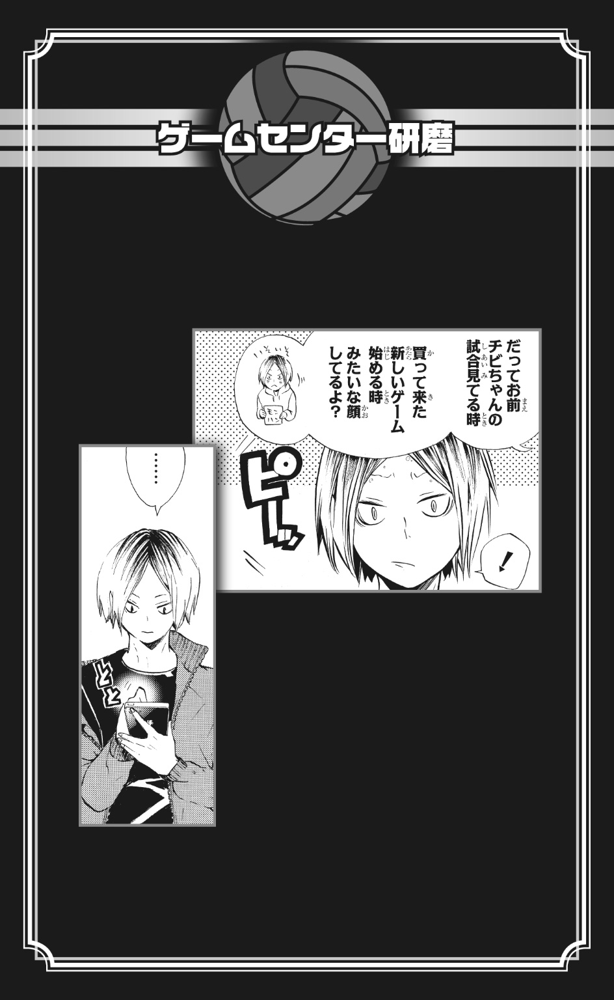
河川敷を夕陽が染めていた。遊ぶ子供たちの甲高い声が聞こえてくるおだやかな夏の道、高校生の集団が楽しげに歩いていた。赤いジャージに大きなバッグ、やけに目立つ彼らは部活帰りの音駒高校バレー部員だった。
ひときわ背の高い灰羽リエーフが、うつむいてゲームをしながら歩く先輩、孤爪研磨を覗きこんだ。
「研磨さん！ アレ、例の新作って買います？ 今日発売のやつ」
孤爪は画面から顔も上げずに返す。
「......ファイナルハンタークエスト？ ネットで注文したから、たぶん届いてると思うけど......。でもリエーフってゲームやらないよね」
そう言って目の端でリエーフを見ると、リエーフは屈託なく笑った。
「やらないですけど、毎日テレビでＣＭ見てたら気になるじゃないですか！ 『この夏、キミは目撃者になる、もはやゲームを超えた大長編ＲＰＧ！』って。研磨さん、これから買いにいくからちょっとつき合ってくださいよ」
「やだ」
取りつく島もない。会話を放棄してゲームに目を戻した孤爪の態度に、３年生の夜久が思わず吹き出した。
「おいリエーフ！ ニワカが適当なこと言うから、ウチのゲーマーが怒ったじゃねーか！」
「え、俺、なんか言いました？」
リエーフがきょとんと立ち止まり、孤爪がめんどくさそうに顔を上げる。
「......そんなんじゃないし」
そう言いながらも見るからに不機嫌そうな孤爪の前に、リエーフがぬっと顔を出した。
「じゃあ行きましょうよ！」
「リエーフ、顔近い」
「だって、怒ってないんですよね？」
空気を読まない、というかそんな空気の存在すら意識したことがなさそうなリエーフの視線から逃げるように、孤爪はぷいっと顔を背けた。
「それ、『だって』の意味わかんないから」
そう言い捨てて、生ぬるい風が吹き抜ける橋を渡っていく孤爪を、リエーフがめげずに追いかける。
「限定の特典もらったらあげますから！ 行きましょうって！ あ、バス来た！ あれ乗って行きましょうよ。おーい、乗りまーす、止まれー!!」
バスにブンブンと手を振って駆けていくリエーフを見て、黒尾が苦笑した。
「研磨の負けだな、声のデカいバカは強い」
そうして遠慮を知らないリエーフに押しきられ、孤爪は駅前へ向かうバスに無理やり乗せられたのだった。動きだしたバスの窓から見える孤爪の恨めしそうな顔に、部員たちがドッと笑う。道を塞ぐ彼らの脇を、チリンとベルを鳴らして１台の自転車が追い抜いていった。
地元の駅前でバスが停まる。学校帰りの学生や子供を抱いた母親たちに続いてバスを降りると、リエーフは黙々とゲームを続ける孤爪を引っ張ってゲームショップへ向かった。
渋々ついてくる孤爪に、リエーフが言う。
「俺がちょっとやったあと、触らせてあげますから。まあ、俺が先ですけどね！」
謎のポジティブさを見せるリエーフに「子供......」とあきれつつ、孤爪は途中で逃げたりもせず駅前のゲームショップまでついてきた。もちろん、逃げだすほうが面倒だったからだ。
しかし売り場まで来ると、それまで意気揚々としていたリエーフの表情が変わった。
「え？」
新作売り場には、目当てのゲームキャラクターが描かれたたくさんのポスターと宣伝物、繰り返し流されるＣＭ動画はあったが、ゲームそのものは１本もなかったのだ。
「あれ、ない？」
他の棚を探しにいこうとするリエーフをつかまえて、孤爪が「これ」と張り紙を指差した。
――初回入荷分は完売です
そう書かれた張り紙を見て、リエーフが驚く。
「発売日なのに売りきれ!?」
「発売日だからだよ。予約分で売りきれってこと」
「そ、そういうもんなんスか？」
「常識」
孤爪がこともなく言いきると、リエーフががっくりと肩を落とした。
「そんな、ここまで来たのに......。あ、でも、もうちょっと先にもゲーム売ってる店ありましたよね、たしか！」
一筋の希望を見いだしたリエーフだったが、孤爪はサッと目を逸らした。そこまでつき合うのが面倒なのかもしれないし、あるわけがないと思ったのかもしれない。が、リエーフはどうしても行くと言ってきかなかった。
「ここまで来たんだから、もうちょっと頑張りましょうよ！」
「......ムダだと思うけど」
リエーフは帰りたがる孤爪を引っ張って、もう１軒のゲームショップへ向かった。しかしその店にも「完売、次回入荷未定」の案内が張られていた。
「だから言ったのに」
「マジか......」
空っぽの棚の前で力なく立ち尽くすリエーフに気づき、店員が声をかける。
「ＦＨＱだったら、午前中に売りきれましたよ」
「あんなにテレビでやってるのに、なんで買えないんだ......」
猫背の背中をさらに丸めてトボトボと店を出るリエーフがさすがに気の毒に思えたのか、孤爪がぽつりと言った。
「コンビニに残ってたりすることもある、らしい、けど......」
「マジっスか！ それだ！ さすが研磨さん！」
パッと振り向いたリエーフは、一気に元気を取り戻して目の前のコンビニに駆けこんだ。リエーフを追いかけながら、孤爪はひとりごちた。
「......ない可能性のほうが高いよ、って言おうと思ったのに」
重たいドアを押して店に入ると、レジの前に立ち尽くすリエーフの長細い体が見えた。その魂の抜けたような後ろ姿で孤爪は全てを悟り、声をかける。
「......リエーフ、帰ろう。おれ、やり終わったら貸すから」
しかし孤爪の言葉はリエーフの咆哮にかき消された。
「こうなったら、なんとしてでも手に入れてやるからな!!」
コンビニの店内にもかかわらず熱く叫んだリエーフを、店員と客がジロジロと見る。その視線に耐えられず孤爪は「おれ、行くから」と片手をあげた。その声にリエーフが振り返る。
「え、なんでですか？」
「......リエーフ元気だし、おれ、家に帰ったらゲーム届いてるから帰る」
そう言って店を出ようとする孤爪を、リエーフが必死に引き止める。
「そんな！ 渋谷ならありますよ！ いっしょに渋谷行きましょうよ、渋谷！」
すがるような目をするリエーフを見て、孤爪が冷たく言う。
「......人ごみやだ、帰る」
「えー！ 俺を置いて、ひとりでＦＨＱやるつもりですか!?」
「うん、じゃあね」
「じゃあね、じゃないですよ!!」
「............」
全身から帰りたいオーラを出して抵抗した孤爪だったが、すっかり物欲に火のついたリエーフの剣幕に押しきられ、あれよあれよという間にふたたび駅まで連れていかれてしまったのだった。
「はい、研磨さん、急いで！ 暗くなる前に帰りますからね！」
リエーフに両肩をガッシリと摑まれた孤爪が、あきらめ顔でつぶやいた。
「なんなのこれ......」
すれ違う下りの電車は帰宅ラッシュで満員だったが、ふたりの乗った上り電車は座ることはできないものの比較的空いていた。ふたりは冷房の効いた車内に一息つくと、床に荷物を置いてドアに体をあずけた。
「研磨さんって、かき氷派ですか？ ソフトクリーム派ですか？ 俺、スッキリしたいからやっぱりかき氷とかシャーベットとかがいいんですよねー」
「......どっちも頭痛するから」
「えー、キーン！ ってくるのがいいんじゃないですか！ 夏っぽくて！」
「夏は暑いからやだ」
「あ、冬派ですか。こたつでアイスとなると、ちょっとかき氷でもないか。でも夏っていえば......」
「冬は寒いからやだ」とは言わず、孤爪は黙ってゲームをはじめる。そして中ボスのモンスターを倒すアイテムを選んで試しつつ、延々と話しつづけるリエーフに適当にうなずいているうち、電車は渋谷に着いたのだった。
「おお！」
ターミナル駅は、地元の駅とは違って活気にあふれていた。もうすっかり酔っぱらって座りこんでいるサラリーマンもいれば、大勢で写真を撮り合う大学生ふうの男女、大きな荷物を引っ張って歩くバンドマンもいる。
「なんか、みんな楽しそうでいいッスね」
「金曜の夜だから」
気のない様子で応える孤爪に、リエーフがぽかんとした顔で聞く。
「え？ 金曜だったら何なんです？」
孤爪はＸボタンを押して中ボスに麻酔玉を投げつけながら言った。
「明日は土曜だから、会社員の人とかも遅くまで遊べるってことだよ」
「はあ」
そううなずいて少し黙ったリエーフだったが、ふと真剣な顔をすると孤爪に聞いた。
「俺たちにはどうして金曜も土曜も日曜もないんでしょうね」
「え」
確かに彼らに休みはなく、曜日にかかわらず毎日部活があるのだった。金曜の夜だからといって、羽目を外すというようなことはない。さらに合宿ともなると早朝から夜まで１日中練習漬けだ。
「......夏休みだから、だね」
そう言って中ボスを倒すと、孤爪はゲームのスイッチを切ってリュックにしまった。そして改札を出ると、まだ「休みだから、休みがない......？」と首をひねっているリエーフに聞く。
「こっちのほう、よく来るの？」
「え？ ああ、あんまり来ないですね。なんか大きい街って、絡まれたりしそうじゃないスか？」
「わざわざリエーフに絡むかな......」
隣のリエーフを見上げ孤爪はつぶやく。バレーボールの選手たちの中でも目立つ１９０センチの長身は街中ではさらに目を引くようで、今もすれ違いざまに振り返って見ていく男女がいた。
「大きいのも意外と大変だね」
孤爪がぼそっとさらにつぶやくと、リエーフはわけもなく言った。
「でも、俺はバレー強いんで」
「あっそ」
駅を出て、慣れない街を歩きながら孤爪は思った。
部活のあと、ゲームソフトのためにこんな遠くまで来て、それでなくても暑いのに、わざわざ人ごみの中を歩くなんて本当にバカバカしいや。リエーフは単純でバカだけど、悪いやつじゃない。でも、ゲームはひとりでもできるのがいいのに、わざわざ人と買いにくるとか意味わかんない。
そんなことを思いながら、孤爪はリエーフの体を盾にして人の波を歩いていた。そして、キョロキョロと辺りを見まわしながら信号待ちをしていたときだった。ふたりの前で、若い女性が立ち止まる。
「あの、ちょっといいですか？」
女性はふたりを見ると笑顔を作った。
「カットモデルやりませんか？ そちらの彼、根元の髪が黒く伸びてきてますよね、いまなら無料で......」
「.........！」
孤爪の顔が緊張と嫌悪で固まったとき、信号が青に変わった。
ギュッと口を結び、そそくさと逃げるようにスクランブル交差点を渡る孤爪を、リエーフがあわてて追う。
「あ、待ってくださいよ!!」
他人は苦手だ。他人に興味を持たれたくない、関わりたくない、放っておいてほしい。ただそれだけなのに。
孤爪は不機嫌そうに口を尖らせた。
「......リエーフ、早く買って帰ろ」
そう言ってリエーフを急がせておきながら、孤爪はすぐに足を止めた。
家電量販店へ行く途中で急に立ち止まった孤爪に、リエーフが声をかける。
「なんですか、研磨さんキョロキョロして。トイレですか？ もう出そうですか？」
「......違うし」
「じゃあ、何ですか。あ、さっきの美容師さんのとこですか？ やっぱり根元の黒いとこ気になってました？」
「違うよ、ただ......ゲーセンがあるな、と思って......」
そう言って、なぜかバツが悪そうに目をそらす孤爪の腕を、リエーフがガッシリとつかんだ。
「なんだ！ そんなの、言ってくださいよ！ 俺もつき合ってもらってるし、ちょっとくらい入ったっていいですよ！ 入りましょうよ！」
「いや、べつにそこまでじゃ......」
「いいですから！ ほら！」
はっきりしない孤爪の腕を引いて、ふたりは少々寄り道することになったのだった。
自動ドアが開いた途端、中から押し寄せてきた大きな音に顔をしかめたリエーフだったが、孤爪はとくに気にもならないようでふらふら吸いこまれるように中に入っていく。そのいつもとちょっと違う横顔に気づいて、リエーフがつぶやいた。
「これが黒尾さんが言ってた楽しそうな研磨さんか、レアだな......」
孤爪はさっさと両替機に向かってしまったので、リエーフはひとりで中を冷やかすことにした。入り口近くにはプリクラやクレーンゲーム、音楽ゲームが並んでいて、すべての筐体から音楽や台詞がいっしょくたに流れてきて騒々しい。リエーフは逃げるように店の奥に進み、格闘モノやクイズのゲームが置いてある場所までやってきた。
「へぇ......」
孤爪のようにひとりで黙々と画面をにらんでいる人が多いのかと思ったが、そんなこともない。友達同士やカップルで遊んでいる人も多いようだった。リエーフは格闘ゲームで対戦している人たちの後ろから、ゲーム画面をのぞいてみた。
筋骨隆々としたレスラーや顔を隠したニンジャ、金髪の女性や白髪の老人キャラクターたちが、廃墟のようなステージで戦っている。
「なんか、面白そうだな」
そう思ってプレーヤーたちの手元を見てみるが、どのボタンを押したらキックやパンチが出て、何をどうしたら派手な技が出るのか見当もつかない。面白そうだが「ニワカ」がやるゲームじゃないのかもしれない。しかし、画面を見ているうちにわかってくることもあった。
「ヘタクソだな」
「......なに？」
リエーフのストレートな物言いに、ちょうどゲームに負けた男が振り向いた。長髪を後ろで結び、革のベストに迷彩柄のパンツを合わせた男は、彼が使っているレスラーふうのキャラクターにそっくりだ。男はひょろりとしたリエーフの長身に一瞬驚いた様子だったが、すごんだ手前引っこみがつかないのか、立ち上がって続けた。
「じゃあ、おまえはどのくらい上手いわけ？」
「え？ 俺やったことないけど」
リエーフの気負いのない言葉に、男が出鼻をくじかれたような顔をする。
「......は？ それでよくヘタとか言えるな」
「だって、攻撃のタイミングとか距離感悪くて空振りばっかりだったし。やったことなくても見ればわかるけど」
決して悪意はないのだがズケズケと無遠慮なリエーフに、男の顔がみるみる赤くなっていく。しかしリエーフはさほど気にもせず、ゲームを物色しながら近づいてくる孤爪に手を振った。
「あ、研磨さん！」
リエーフと男に気づいた孤爪は、警戒しながらやってくると聞いた。
「知り合い？」
「いえ、全然。そうだ、研磨さんちょっとこの人と戦ってみてくださいよ！」
「......なにそれ」
話の前後がわからない。が、どうやらリエーフに対して怒っているらしい男をチラリと見ると、孤爪はリエーフに向き直って聞いた。
「またよけいなこと言ったでしょ」
「えー？ なんかヘタだったからヘタって言っただけですって。そしたらなんか怒ってきたんですよね」
「......バカ」
普通、怒る。でもどこからどう説明したらいいのかわからず孤爪が言葉を失っていると、男が口を開いた。
「なに、キミは強いわけ？」
リエーフでは話にならないとでも思ったのか、男は孤爪に矛先を向けてきた。
「............」
シャッターを下ろすかのように一瞬で表情を消した孤爪に気づいてか気づかずにか、リエーフが自信満々といった調子で男に言った。
「当然！ 研磨さんのほうが強いね！」
「......リエーフ」
迷惑そうに顔をしかめた孤爪を見て、しかし男はニヤリと笑った。
「強いと聞いたら、勝負しないわけにはいかないな！」
「やっつけちゃってくださいよ、研磨さん！」
なぜかすっかりやる気になっている男と、男を隣で焚きつけるリエーフを見て、孤爪は深いため息をついた。
これ、どういう流れなんだろう。ゲームはひとりでもできるのがいいのに、なんでわざわざ知らない人と対戦しなくちゃいけないんだろ。ゲーセンなんか来なきゃよかった。何が置いてあるかちょっと気になっただけだったのに、なんでこんな面倒なことに巻きこまれてるんだろう......。他人はわからない、他人は苦手だ。
「......おれ、もう行くから」
そう言ってきびすを返した孤爪を「ちょっと待ってくださいよ！」とリエーフが引き止める。しかし孤爪は静かに言った。
「はやくＦＨＱ買いに行かないと、売りきれるかもよ」
「う......」
そうだった、今日はゲームソフトを買いにきたのだった。でも、ここで帰るのも逃げるみたいで気に入らない。迷うリエーフに、孤爪が淡々と言う。
「おれ、先行くから」
「研磨さん！」
しかし孤爪はもう振り返りもせずに、店を出ていこうとする。
「それじゃあ......」
リエーフは、ふたたび呼び止めるかわりにジャージのポケットを探った。そして財布から小銭を出すと、男がプレーしていた格闘ゲームに投入する。
デモを流していたゲームがスタート画面に変わり、派手なオープニング音楽が鳴る。
その音に、孤爪がパッと振り向いた。画面を見る目が輝く。
リエーフが叫んだ。
「はじまりましたよ！」
無言のまま戻ってきた孤爪は、椅子に座ると慣れた手つきで右手をボタンに置き、左手をレバーに添えた。様子を見るように何度かカチャカチャと動かすと、コクンとうなずく。
孤爪は静かに顔を上げると男に言った。
「そっち、座って」
「え？」
「勝負するんだよね」
孤爪の目が鈍く光る。
「え、お、おう......」
孤爪の急変に驚きながらも男は向かいの椅子に座ってコインを入れ、さっきも使っていた巨体のレスラーを選択した。リエーフがうれしそうに声をかける。
「研磨さん！ ボッコボコにしてやってくださいよ！」
「......リエーフ、うるさい」
筐体から、ゲーム開始の声がする。
『ＦＩＧＨＴ！』
勝負がはじまった。
しかし孤爪が選んだ白髪の老武道家キャラクターは、まったく見当はずれのところに攻撃したり、フィールドの端まで飛んでいったりするだけで、一方的に攻撃を受けてはライフを削られている。小柄な老人がレスラーに殴られているのは、ゲームとはいえ見ているだけで痛そうだ。
リエーフが心配そうに聞く。
「......研磨さん、あの、大丈夫ですか？ 対戦とかそういうのは苦手とか？」
しかし孤爪はこたえず、たまに首をひねったりしながら攻撃を受け続けている。決して上手くはない相手とはいえ、こちらの攻撃が当たらないのだから勝負にならない。孤爪の操作する老武道家のライフゲージが緑から黄色になる。対戦相手が小馬鹿にしたように笑うのが見えて、リエーフがじりじりしながら叫んだ。
「研磨さん、負けちゃいますって！」
ゲージが赤になったそのとき、防戦一方だった孤爪がつぶやいた。
「......うん、だいたいわかった」
「え？」
リエーフが聞き返した瞬間、老武道家がひらりと軽やかに舞った。そして、レスラーの攻撃をかわすと、派手な投げ技を決める。孤爪がぶつぶつと口の中でつぶやくのが聞こえた。
「......しゃがみガード、からの、投げ。で、ダウン攻撃。......で、こいつが立ったらコンボ、あ、出た。溜めて......ジャンプ攻撃」
反撃がはじまったのだ。コンボ攻撃と大技を繰り返して、老武道家がどんどんレスラーのライフを削っていく。孤爪の豹変に、リエーフが興奮しながら声をあげた。
「研磨さん、このゲームやったことあるんじゃないですか！ 俺、心配して損した！」
「......やったことないけど、格ゲーはだいたい同じ仕組みだし。技のタイミングとかは慣れないと難しいけど。コマンドもここに書いてあるのしかわかんないし」
そう言いながらも、孤爪の老武道家はどんどんレスラーをフィールド端の壁に追いつめていく。そして逃げ場を失ったレスラーに容赦なく技を出しつづける。相手のゲージが緑から黄色に、そして赤に変わった。
孤爪が画面を見たままつぶやく。
「でも、リエーフもたまには正しいことを言うね」
「え？」
そのときスピーカーから『ＹＯＵＷＩＮ！』という声が聞こえた。
「研磨さんスゲエ！ やっぱ強いじゃないスか!! 偉そうなこと言って、こいつヘタですよ！」
はしゃいで飛び跳ねるリエーフの目に、財布から小銭を出す対戦者が見えた。
「も、もう１回！」
大量の百円玉を重ねてコイン投入口の脇に置いた男が、筐体越しにふたりをにらんでいる。孤爪は対戦者のコンティニューを示した画面を見ると、薄く笑った。
「いいけど......ムダだと思うよ？」
孤爪の目の中で、画面が青く光っていた。
『ＦＩＧＨＴ！』
勝負開始の声とともに、今度は孤爪の老武道家が最初から攻めていく。速い。
「......あ、これでハメ技になるのか。じゃ、つまんないから......投げキャンセルで、足払い、中キックで浮かせて......コンボかな？ あ、繫がった」
パンチとキックの流れるような波状攻撃で、見る間に相手のライフがなくなり倒れた。リエーフが大きくガッツポーズする。
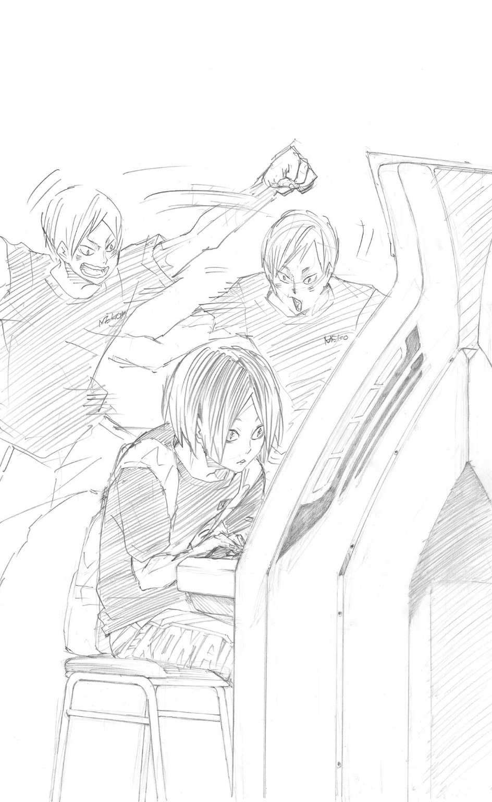
「スゲエ！ 研磨さん、ガチゲーマーじゃないスか！」
『ＹＯＵ ＷＩＮ！』と表示された画面の中で、白髪の老武道家が勝利に笑うのと対照的に、孤爪は静かにじっと画面を見ている。そして、対戦相手がコンティニューしたことを確認するとポツリと言った。
「......たまには、人を相手にやるのもいいね」
孤爪は獲物をいたぶる猫の顔になっていた。
「研磨さん......怖え......」
リエーフが思わず一歩下がり、そしていつの間にか自分たちの周りにギャラリーまでできていることに気づく。
「あのプリン頭、けっこうえげつないぞ」
「容赦ないな......」
見物する者だけでなく、列をなして順番待ちをしている者もいるのを見て、リエーフが不安そうに聞いた。
「研磨さん、あの、俺のゲームは......？」
「......あと少し、次のやつ倒したら」
耳をつく効果音、眩しいエフェクト、周りからの歓声――。熱い渋谷の夜は、こうして更けていったのだった。
どのくらいそうして対戦していただろうか。20連勝したところで孤爪がハッと我に返り、あわててゲームセンターを出ると外はすっかり暗くなっていた。リエーフも途中から自分のゲームのことより、孤爪の対戦に夢中になってしまったのだ。
量販店へ急ぐふたりだったが、店はちょうど閉店時間を過ぎたところで、店内からは小さく蛍の光が聞こえていた。
「俺のゲーム......」
夜の街ですっかり放心するリエーフを見て、孤爪が申し訳なさそうな顔をする。
「......なんか、ごめん」
「いや、研磨さんのせいじゃないですから。店に入れたとしても、買えたかどうかわかんなかったし。......それに、ゲーセン楽しかったんで」
そう言って駅へ向かうリエーフの背中に、孤爪がつぶやいた。
「......おれも」
「えー、マジっすか！ なんかスゲエうれしい!!」
振り返って大げさに喜ぶリエーフを見て、孤爪は首を傾げた。
「なんで......」
そしてふたりはふたたび電車に乗り、今度は満員電車にゆられて地元の駅まで帰ったのだった。
「研磨さん、あのスゴイ技どうやって出したんですか!? グルグル回転して、バーンって飛んでくやつ！」
「え？ 最初の相手は、ダウンのあと起き上がるときにガードが甘くなる癖があったから、そのときにタイミング合わせて......」
ふたりで格闘ゲームの話、そして今日発売のゲームの話をしながら――。
「ウーッス」
翌朝、練習時間ギリギリにリエーフが部室のドアを開けた。先に来ていた孤爪が扇風機の前で「遅い」とにらむ。そしてロッカーを開けると、リュックから小さな包みを出した。
「リエーフ、これ」
「なんスか？」
手渡された袋を開くと、その中身は昨日ふたりで探しまわったゲームソフトだった。
「え、マジ？」
リエーフはわざわざケースを開けて中まで確かめ「うわ、本当に入ってる！」と興奮して孤爪に聞いた。
「これ、俺、先にやってもいいんですか!?」
「......いや、おれ、それもうクリアしたから」
孤爪の言葉に部員たちがどよめく。
「ついに、超大作を一晩でやったか......」
「それは、ちゃんと楽しめてるのかな」
着替えていた夜久と海が顔を見合わせたが、リエーフは素直に尊敬の眼差しで孤爪を見ていた。
「研磨さん、俺のためにわざわざ急いで......」
「いや、楽勝だっただけ」
ひとことそう言うと、孤爪はさっさと部室を出て体育館へ行ってしまった。残った部員たちが、口々に喋りだす。
「やっぱりすごいですよね、研磨さんって。僕、ゲームとか攻略本読みながらじゃないとできないです！」
「芝山、それはやってて楽しいの？」
「さすが研磨、最強のゲーマーだな......」
「いや、あれは必死で終わらせたとみたね」
そう言って笑った黒尾に、リエーフがムキになって言い返す。
「研磨さんは本当にすごかったんですよ！ 昨日だってゲーセンで......」
そう言ってリエーフが昨日の対戦について話しだしたとき、孤爪がドアを開けて戻ってきた。
「リエーフ、うるさい」
眉をしかめた孤爪の顔を見て、黒尾がさらに笑う。
「研磨、おまえ外で聞いてたのか？」
「......タオル取りにきただけだから」
ムスッとしてロッカーからタオルを取り出し、ふたたび出ていこうとする孤爪に犬岡が声をかけた。
「あの、研磨さん！ 次、俺も貸してもらっていいですか!?」
「リエーフは研磨とは違うから、１日じゃ終わんないぞ。夏休みが終わってもまだやってるんじゃないか？」
「いや、すぐ飽きて明日には持ってくると思いますね」
海と山本がからかうと、リエーフが「ちゃんとクリアしますよ！」とさっそく説明書を読みはじめる。
いつも通りの騒がしい部室を見まわし、主将の黒尾が苦笑いする。
「ほら、おまえら、さっさと練習はじめるぞ！ リエーフ、おまえレシーブミスしたらそのゲーム没収な。夜久、リエーフ頼むぞ」
「えええええええええ！」
「行くぞ、リエーフ！」
夜久に引きずられて体育館へ運ばれていくリエーフを見て、部員たちが気の毒そうに笑う。土曜も日曜もない、音駒高校バレー部の練習がはじまったのだ。
烏の家 第７怪
「犬神様に呪われた一族」
「ええと、あなたたちがエクソシストで、ここが呪われた家だという話、とりあえず信じますけど......。子供たちに危害がおよんでも困っちゃうんで......」
父親は、兄妹を両手に抱いたままおずおずと神父に言った。それから疲れきった表情でこぼす。
「まあ、家賃も格安だったもんな。薄々こういうことじゃないかと思ってたんだけどさ......」
「すぐケチるからこういうことになるんだよなー」
息子の指摘にショックを受ける父親の腕の中で、妹が窓の外を指さした。
「だれかいるよ！」
窓の外、荒れ果てた庭の草むらがガサガサと動いている。ヒナガラス、ぬいぐるみ......といった大きさではない。隠れているのは、人間だ。いや、人間に取り憑いた悪魔か......。エクソシストのふたりは静かに顔を見合わせると、十字架を片手に立ち上がった。そして、そっと窓を開けて草むらに分け入る。その様子を見ながら、父親が子供たちをぎゅっと抱きしめた。
「悪霊退散！ 悪霊退散！」
そう叫んで十字架で草むらを叩きだしたふたりを見て、リビングから見ていた兄が不安そうに「あれでいいんだ......」とつぶやく。そのうち、殴られた男が草むらから顔を出した。その顔はなぜか紅潮している。
「い、痛い......けど、美人の折檻最高!!」
「この、しぶとい悪霊め......！」
女エクソシストがポカスカ叩き続けると、今どきめずらしい学生帽をかぶった男がさらにうれしそうに叫んだ。
「オウ、もっと強く！ いや、でも悪霊は俺じゃなくて、この家だから！ 早く出てけって......オウッ！」
結局エクソシストたちに捕まりながら、なおも「早く出てけよー！」と繰り返す男を見て、父親がため息をつく。
「俺たちが何したって言うんだよ......、こっちだって、もう家賃は払ってるのに......」
学生帽の男を後ろ手に縛ってリビングに座らせると、神父は「お話を聞かせてください」と頭を下げた。
余所者に話すわけにはいかないと、男は頑として口を開かない。ただ、神父の隣に立つ女エクソシストをチラチラ見てはクネクネと恥ずかしがっている。
神父が、申し訳なさそうに弟子を見た。
「清水君、悪いけどお願いできるかな」
女エクソシストはしかたなさそうにうなずくと、学生帽の男に向かって言った。
「......お願い、話して」
男から表情が消えた。そして、ボッと顔面を真っ赤に変色させると堰を切ったようにペラペラ語りだした。
「え？ そ、そうですか？ 聞きたいですか？ じゃあ......以前、ここには遺産相続で揉めた一族がいて、犬神様の呪いとも言われてたんですけど、いやー、死ぬわ死ぬわ、俺はあの夏はまだ中学生で......」
聞かれていないことまで喋りだす男を見て、兄があきれかえる。
「口、軽い！」
〈続〉
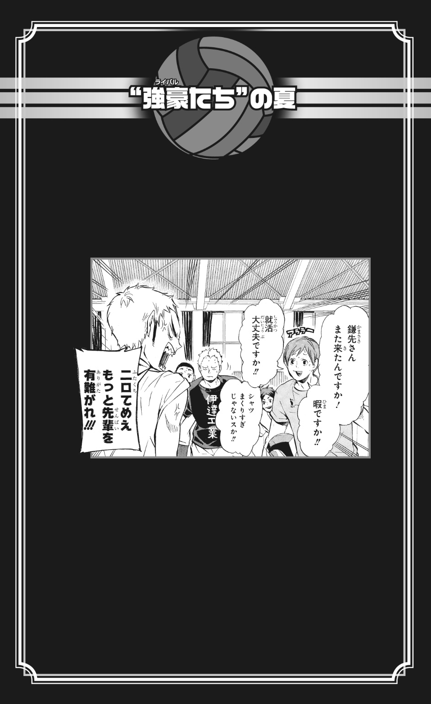
強豪校には強豪校たる所以がある。理由なく、ただ偶然強くありつづけている、ということなどない。
指導者の善し悪しや部員の実力、それは要素のひとつにすぎない。大会で成績を残せば、中学時代に名をあげた優秀な選手が入ってくる。近隣の高校との練習試合や合同合宿なども積極的に行われ、切磋琢磨する機会も増えるだろう。強さはチャンスを呼ぶのだ。こうして、強いチームはより強くなっていく。
さらには大学との交流試合に呼ばれることもある。レベルに差のある大学生を相手に試合をしても、勝負は決まっていると思われるかもしれない。
しかし目的は勝敗ではない。大学チーム側としては、強豪校や将来有望とみられる選手のいるチームを招待することで、スカウトする選手を観察することができ、高校生たちは高レベルな大学生チームとの試合で経験値を得ることができるのだ。
「はあ、そういうもんですか......」
監督の追分から説明を受けた二口が、人気のない職員室で気のない返事をした。
「１年のとき、大学なんかに呼ばれましたっけ？」
「それだけ、おまえらの代が期待されてるということだろう」
椅子に深く腰かけた追分は、表情を緩めるでもなく、普段と変わらない厳しい口調でそう言った。
「はあ......」
二口はたぶん褒められているのだと頭では理解しながら、素直に喜ぶことができず、不機嫌そうな顔をした。このあいだまでだって、弱かったわけじゃねーよ。
窓の外からは、野球部やサッカー部の声が聞こえてくる。この暑いのにわざわざ外で走りまわるなんてご苦労なことだ、と思う。
「......まあいい、俺も今年は期待してるからな。頼むぞ、新主将」
「ウス」
インターハイ予選敗退後、３年生の引退によって伊達工業高校バレー部の主将となった二口が、一礼して職員室をあとにした。
夏休みの学校は閑散としていて、１学期よりも暑いのにもかかわらず、どこか広く冷たく感じる。廊下で、そして玄関で、たまにすれ違う生徒はみんなジャージや練習着姿で、制服を着用している者はいない。
「......みんな、練習熱心だこと」
かく言う二口も、もちろんジャージにＴシャツという練習着姿で、この暑いのにわざわざ空調もない体育館へ練習しに行くのだったが。
「つまり、青田買いってやつだな。品定めされるみたいで気にいらないけど、まあいい経験になるだろ。春高予選の前に他のチーム見られるチャンスだし。３年抜けてるとこが多いだろうから、インハイのときとはまた様子も違うだろうしな」
二口が部員たちに地元の大学から誘いのあった交流試合の説明をする。青根や小原、そして１年生の作並をはじめとする部員たちがズラリと体育館に並んでいた。伊達工業高校バレーボール部は、宮城県の強豪校のひとつだけあって部員数も多い。
「この機会に注目されれば特待生で推薦入学も夢じゃないらしいからな、受験も就職もスルーできるって話だぞ。おまえらみんなどうせバカなんだから、頑張っていいとこ見せとけよー」
そう冗談めかして二口が笑ったときだった。背後でいきなり扉が開く。
「おまえら、裏口入学とか何考えてんだ！ そんな卑怯者に育てた覚えはないぞ！」
重たい扉をガラリと勢いよく開け、真剣な顔で怒鳴りながら入ってきたのは、鎌先だった。引退した３年生たちが様子を見にきたのだ。
「誰もそんな話してないし、育てられてないし。何しにきたんですか鎌先さん。就職浪人は心折れるって聞きますよ？ こんなところで遊んでないで、もっと勉強したほうがいいんじゃないですか？」
先輩相手とは思えない二口の軽口にまんまと乗せられて、鎌先がムキになる。
「放っとけよ！ っていうか、おまえら、不正入学の話してたんじゃないのか？」
「まず正しい知識を得てから不正の話してくださいよ」
「俺は不正なんてしないぞ！」
胸を張って堂々と宣言した鎌先を見て、二口があきれ顔でつぶやいた。
「......無知は罪って言いますけどね」
「はァ、打ち身？ 何の話だ、ゴラ!?」
すごみながら鎌先が聞き返し、青根がそろそろふたりを止めようかと一歩動いたところで、これまであきれたように後ろで見ていた茂庭が元主将の貫禄を見せた。
「はい、二口そこまでな」
「......へーい」
二口が素直に黙り、青根がほっとして足を戻すと、元主将の茂庭は部員たちに向き直った。そして、子供に言い聞かせるように注意をはじめる。
「おまえら、いいか？ 交流試合では、絶対に粗相のないようにしろよ？ 時間通りに行って、ちゃんと挨拶して、他の学校にケンカ売ったり、大学の備品壊したりするんじゃないぞ？」
茂庭の心配そうな顔を見て、二口が苦笑する。
「......しませんよ。茂庭さん、俺たちのこと何だと思ってるんですか」
「してるだろ！ おまえと青根が！ いつもいつも!!」
茂庭が困ったような怒ったような、というか、もはや泣きそうな顔で二口と青根を指さしたが、二口はいつもどおり空々しくとぼけてみせる。
「そうでしたっけ？」
「.........？」
青根も自覚はないらしく、首を傾げている。
「あーもう、こいつらだけで交流試合とか、すごい心配だよ！」
頭をかきむしる茂庭を見て、二口と青根以外の部員たちが申し訳なさそうな顔をした。
バレー部全体が「クソ生意気な後輩」揃い、というわけではない。飛び抜けて無礼で勝手なのは二口と青根のふたりだけだ。しかし茂庭たち３年生にとっては不幸なことに、試合時に頼りになる、実力の抜きん出た後輩もこのふたりなのだった。
悩みの種の二口がニヤニヤと笑っている。バレーをしているときより、先輩たちをおちょくっているときのほうが生き生きとしているようにも見える。久しぶりに３年生と遊ぶことができて、うれしいのかもしれないが。
引退してなお二口と青根に振りまわされる茂庭が気の毒になり、同じく３年生の笹谷がやさしく声をかけた。
「茂庭、おまえ心配だからって交流試合についていくなよ？」
「行かないけどさぁ、俺、もう引退してるし......」
「いや、引退とか関係なくて、おまえ、ついていったら胃こわしそうだからさ」
「......そこまでか」
先輩ふたりの会話に二口が口を挟む。
「そうそう、可愛い後輩を信頼してくださいよ、センパイ！」
臆面もなくそう言った二口の笑顔を見て、茂庭が長いため息をつく。
「だったら、信頼させてくれよな......」
後輩たちとの、ほんの数分のやりとりですっかり憔悴しきった茂庭の隣では、鎌先がまだ首をひねっていた。
「打ち身、じゃないのか？」
８月某日、早朝。伊達工業高校バレー部の面々は学校所有のバスに乗り、交流試合が行われる大学へ向かっていた。
頭上に広がる青空が、今日もまた暑い１日になると教えてくれる。絵に描いたような夏休みらしい空だったが、彼らが向かうのは、海でもプールでもなく、暑く、汗くさい体育館だった。
１８０センチをゆうに超える鉄壁のレギュラー陣、試合の際には会場が伊達工の応援一色になるほど多数の控え部員たち、そして足元のボールバッグなどの荷物で車内は窮屈だった。その一番後ろの席で、二口が春高バレー宮城県予選会のパンフレットを開く。
「他にどこの学校が来てるんだろうな」
隣に座る青根も黙ってパンフレットを覗きこむ。
「いけすかない白鳥沢や青城のやつらはわざわざ来ないだろ。たぶん和久南とか、あと今回の予選で目につくやつは......」
ページをめくる二口の手が止まった。
「おい、見ろよ。こいつ２メートルはあるんじゃないのか？」
角川学園の写真に写る２メートル選手、百沢に気づいたのだ。ピントの合っていない写真でもわかる、その巨体。隣の青根の目が光り、車内がざわついた。
「青根より10センチ近くデカいってことだろ......」
二口が真剣な顔でパンフレットの写真をにらんだ。そして隣の青根に視線を移し、じっと見ていたかと思うと、急に吹き出す。
「......逆にウケるよな！ 絶対さがして青根と並べて写真撮るからな！ 大丈夫、大丈夫、顔の怖さじゃおまえのほうが上だからさ！ 全然負けてねーって！」
ケタケタと笑う二口の隣で青根が弱った顔をした。青根はその強面の外見、鉄壁の要である高さとスピードを誇るプレースタイルとは裏腹に、バレーを離れると心優しく控えめな少年なのだ。
ただ、少なからず頑なすぎるところと、わざわざ敵の前まで進み「ロックオン」する悪癖、そして二口に振りまわされがちなため、先輩たちにとっては扱いにくい後輩であるのも事実だった。
２メートル選手の話題で盛りあがっているうちに、バスは大学に到着した。ドアが開き、部員たちが降りようとすると、前の座席に座っていた追分監督が振り向いた。そして険しい表情で部員たちを鼓舞する。
「いいか、おまえら！ ３年が抜けて、伊達工はまた新たなスタートラインに立ったことになる！ 大学生だろうとなんだろうと、徹底的に止めて、ねじ伏せろ！ おまえたちの実力を見せてやれ！」
「オス！」
鉄壁を誇る伊達工業バレー部員たちが、いま交流試合会場に降り立った。
「おい小原、ちょっとおかしくないか？」
大学構内に入り、先を歩いていた二口がいきなり振り向いた。二口と同じ２年生、坊主頭の小原が聞き返す。
「何がだよ？」
「大学なのに、なんで女子大生の姿が見えないんだ？」
「夏休みだからだろ？」
小原の言葉に、二口がハッと息をのむ。
「クソ、騙されたか......」
「......誰も騙してないけどな」
ボールやカゴなどの荷物を持ち、男子高校生らしい会話など交わしながら、部員たちは指定された体育館に向かった。そして会場に着いた途端、それは否応なく視界に飛びこんできたのだった。
周囲の人々から、文字どおり頭ひとつ飛び出している異形の男。
ゴクリとつばを飲みこんだ二口が、かすれた声を出した。
「......あれが、本物の２メートルか。未知との遭遇だな」
「これは、探すまでもなかったな」
先に体育館に着いていた角川学園の部員たち。その中にそびえ立つ２メートルの男を見やりながら小原が応えた。二口はなんとかいつものやんちゃな顔を取り戻すと、後輩の作並を小突いた。
「作並、ちょっとあいつと並んでこいよ」
「......え、怖いです！」
助けを求めるように二口を見上げた１年生リベロの作並は１６４センチ。２メートルの選手とは、40センチ近い差がある。並んで立てば、大人と子供というよりは遠近感がくるったように見えることだろう。
「怖がってどうするよ、予選であいつと戦うことになるかもしれないんだからな？」
「そ、そうですけど......」
怯える作並を守るように、青根がその前に立ちふさがった。そして、二口を諭すようにじっと見下ろす。その視線に二口が肩をすくめた。
「......わかったよ、作並、いいからボール準備してこい」
「オス！」
作並はホッとして他の１年生に声をかけると、大学生たちの間をパタパタと走っていった。その作並の背中、そしてイヤでも目に入ってくる角川の２メートル選手と隣の青根の姿を、二口は順番に見ていった。そして、感心したようにつぶやく。
「おまえらは、ホントうすらでかいな」
「............!!」
青根がショックを受けたような顔をしたが、むしろ二口は大学生のなかにあって見劣りしない体を褒めたつもりだった。二口も体格に自信がないわけではない。しかし、ここではやはり頼りなく見えるのを否定できない。
「これでも、鍛えてんだけどな。でも、鎌先さんに鍛えかた聞くのも悔しいし。それに、あんまムキムキしてんのもバカっぽいからなー」
自分の腕を見てぼやきながら、どうしても口の悪さが出てしまう二口を見て、青根がまた弱ったような顔をした。
２面あるコートのひとつで和久谷南高校がアップをはじめる。そして、もうひとつのコートで角川学園と大学生チームが向かい合った。注目の２メートル選手、百沢の登場に体育館にどよめきが起こる。まだ試合のない伊達工業は、体育館の２階ギャラリーから観戦することにした。
「なんか、ああいう妖怪いたよな。四角くてデカい石みたいなやつ」
手すりにもたれかかって下の様子を観察しながら二口が軽口を叩く。しかしその顔はいたって真剣だ。鉄壁の防御を誇る伊達工としても、２メートル選手の存在は脅威だった。鉄壁の要である青根も黙ってコートをにらんでいる。
甲高いホイッスルが鳴り、練習試合がはじまった。
角川の２メートル百沢はもちろん前衛でスタート。目の前にあるネットの高さは２メートル43センチある。しかし百沢ならば腕を伸ばしただけで軽くネットから手が出るだろう。その体軀、存在だけで、十分に相手へのプレッシャーとなっていた。
大学生チームの力強いサーブを、角川のリベロがなんとか上げる。そしてトスが上がると、百沢の巨体が跳び、ブロックの上から打った。その重たいアタックを拾った大学生チームが攻撃に転じる。
体育館にいる誰もが、２メートルのブロックを期待した。コートに視線が集まる。
百沢が、跳ぶ。
突如現れた壁に、大学生チームのボールが叩き落とされる。
コートの周囲から驚愕の声が上がった。
大きい。コートに巨木が生えたようだ。そしてただ大きいだけではない、動ける。
「でも、おまえのほうが速い。目もいい」
上から試合を見ていた二口がそう言うと、隣の青根もコートをにらんだまま当然のようにうなずく。それは根拠のない自信ではなかった。これまで幾多の強豪と戦ってきた伊達工業のふたりが、相手の力量を正確に読んだまでだ。角川学園に対するふたりの評価はほぼ同じようだった。
「あれは初心者だな。......チームの戦力をトータルで見たら、それほど怖いこともないか。大学生相手だから少し頼りなく見えるのを差し引いても、他のやつらは普通だな。ただ来年以降、力をつけてきたら話は別だけど」
青根もうなずく。彼らは決して相手を見くびることはしない。真剣勝負では、奢りが鉄壁に穴を穿つことを知っているのだ。
「で、いま怖いのは......」
二口が持っていたパンフレットに目を移した。パラパラとめくっていると、白鳥沢の牛島の鋭い目、そしてやけにカメラ慣れした青葉城西の及川の笑顔が目に入ってきて、二口は顔をしかめた。
「......この、３年が残ってるやつらだな」
５月、インターハイ宮城県予選で優勝し、全国への切符を手に入れたのは例年通り白鳥沢学園。敗退した学校の３年生はその時点で部活を引退し、受験勉強や就職活動に専念することが多い。茂庭たち伊達工業の３年生もそうだった。しかし、引退せずにさらに春高をめざして、残った３年生がチームを率いる学校もある。
たとえば、青葉城西高校や、下にいる和久谷南高校がそうだ。そしてもちろん白鳥沢学園も。
どこも手強いチームだ、しかし敵わない相手ではないと二口は判断していた。俺たちも強い、との自負がある。
「及川みたいなチャラいやつに、絶対負けらんねーからな」
「......ぶえっくショイッ!!」
大きなクシャミをしたのは及川だった。ここは青葉城西高校の体育館、副主将の岩泉が無表情に近づいてくると、及川に拳を振り上げた。
「この大切な時期に風邪なんかひいたら殴るって、何度も言ってるだろうが」
「風邪じゃないから殴んないで！ ......もう、クシャミなんて、女の子たちに噂されてるだけだから、いちいち心配してくれなくていいんだからね」
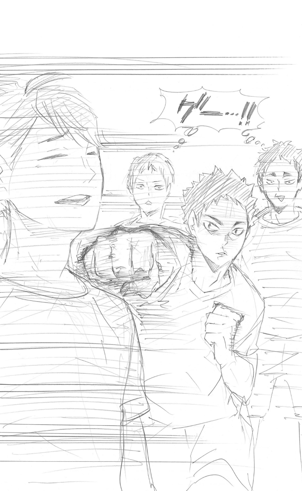
岩泉が黙ったまま冷たい目で及川を殴る。
「痛いよ岩ちゃん！ 今なんでぶったの!? ひどくない!?」
「オメーが！ 言ってもわかんねーバカだからだよ！」
「何も言ってないし!!」
おなじみのやりとりをはじめた及川と岩泉を見て、彼らと同じく３年生の花巻がめんどくさそうにつぶやいた。
「......言われてわかんないバカが、殴られてわかったためしはないけどな」
「ちょっとマッキー、悲しいこと言わないで！」
及川が花巻に訴えるが、岩泉はにべもない。
「悲しいのはおまえの存在だ！」
後輩たちも困った顔で３年生を見ている。
「あー、また及川さん。なんでわざわざ怒らせるようなこと言うのかね......」
「及川さん、試合のときはかっこいいんだけど......」
毎日、どんなに情けない場面を見せられようとも、部員たちは皆、及川を信頼していた。
及川はいつもチームメイトたちの様子をよく見て、細やかに声をかけている。それは部員たちをやさしく気遣うというより、掌握しコントロールしているのだという者もいる。
その観察眼によってスパイカーたちの攻撃力を最大に引き出す及川は、セッターとしての能力は県内一と言ってもいいだろう。
及川が殴られた頭をさすりながら言う。
「岩ちゃん、俺はね、ウシワカちゃんから主役の座を奪う男なんだよ。もっと大事にしてよね！」
ぶつくさと文句を言う及川を、岩泉があきれたようににらむ。
「だったらチャラチャラしてんなっつーの」
相対したものの精神ごと吹き飛ばすような牛島のスパイクが、体育館を震わせた。
ここは白鳥沢学園バレー部専用の体育館。彼らの練習相手はＯＢの大学生だが、経験や体力の差を感じさせない互角の戦いをしている。
「最近の牛島さん、さらに怖いよな」
「試合近いからだろ」
後輩たちがコートの牛島を盗み見て言った。
普段からストイックな牛島だが、試合前の気迫には鬼気迫るものがあった。全国でも三本の指に入るといわれるスパイカー牛島は、一流の選手が揃う白鳥沢のなかでも、パワー、精神力ともに群を抜く。ついてこられる者は、いない。
王者と呼ばれるチームにおいて、さらに畏怖される存在――。
牛島のライバルは、ただ自分ひとり。下々の者など歯牙にもかけない。
「もう１本！」
天才・牛島若利が、再び床を蹴った。
交流戦が行われている大学の体育館では、和久谷南高校と大学チームの試合がはじまったところだった。二口たち伊達工業の選手たちも身を乗り出して和久南の観察をはじめた。
「......さて、お手並み拝見といきますか」
和久南は大学生相手に緊張も気負いもなく、普段どおりの試合運びをしている。３年生エース中島の空中戦を中心とした緩急自在の攻撃、安定感のある守備。経験のある３年生を主体とした和久南の総合力は、青城にもひけをとらないだろう。
「......ちぇ、隙がねーでやんの。やっぱり３年がいると安定してるよなー」
３年生の残っている和久南は、どこかチーム自体に余裕があるように見える。いや、３年生が引退して、自分が主将になったプレッシャーから、そう見えるだけなのかもしれないが......。
そして、二口はガラにもなく引退した先輩たちのことを思い出している自分に気づいていた。
口うるさいけど、いつもチームの状況をよく見ていた主将、鎌先さんはバカだけど力強いプレーでチームを引っ張っていた。オッサンくさいところのある笹谷さんだって信頼できる先輩だった。
これまで先輩たちに守られて好き勝手なことばかりやっていた自分や青根が、先輩たちのように後輩を指導しながら、これまで以上のチームへと成長させていくことができるんだろうか。
「あっちの角川も、３年は引退してるんだよな......」
思わずつぶやいた二口に気づき、小原がからかうように声をかけた。
「どうした、３年に戻ってきてほしくなったか？ 二口主将」
「そんなわけないだろ！」
二口はそう言って、小原のふくらはぎにローキックを入れた。
「痛え......」
小原が顔をしかめた。眉間にしわを寄せた青根ににらまれ、二口は肩をすくめた。
「......まあ、和久南や青城、それに白鳥沢。３年のいるチームが手強いのは確かだけど、逆に考えれば、去年までと比べて大きな変化があるわけでもないっていうことだ」
二口はそう言ってチームメイトを見まわした。
「......それに、どんなに上手いこと回すチームだろうと、止めれば点は入らない」
部員たちが自信にあふれた顔つきでうなずくのを見ると、二口は続けた。
「止めるぞ。俺たちの鉄壁は、最強の防御で最速の攻撃だ」
その態度に、小原が驚く。
「なんか、主将っぽい......」
「うるせーよ!!」
照れ隠しに小原をにらんで怒鳴りつつ、二口は先輩たちの言葉を思い出していた。インターハイ予選敗退後、部室の扉越しに聞いた３年生の想いを......。
――もっとやりたかったなあ。
――引退したくねえなあ。
思いがけず聞いてしまった涙ながらの本音、そして茂庭主将の言葉。
――来年の鉄壁は、絶対崩れねぇよ。
烏野高校との試合のあと、主将の茂庭は二口と青根に言った。「おまえたちは強い」と。そして、「青葉城西も、白鳥沢も烏野も、全部押さえつけて全国へ行け」と。そう託して引退していったのだ。
「............」
二口は、グッと拳を握った。
引退してほしくなかった。春高予選、先輩たちといっしょに雪辱を果たしたかった。でも、３年生が引退したからこそ、その想いを受け継いだ者たちのチームだからこそ出せる力があるはずだった。
二口は、１、２年生だけとなった仲間を見まわすと静かに言った。
「俺たちは、強い」
「おう！」
声を揃えた仲間を見て、二口はみんなが同じ思いを胸に持っているのだと確信した。新しいこのチームで、全国へ向けて勝ち進んでいくのだ。
ちょうど角川の試合が終わった、次は伊達工業の番だ。
「よし、いくぞ！」
「オス!!」
鉄壁、その強固な壁は決して引くことがない。ただ先へ先へと強い想いを繫いでいくだけだ。現れる強敵を、ねじ伏せながら――。
いま、士気を上げた伊達工業の猛者たちが、戦場へと向かっていく。受け継いだ想いを繫いで、前進するために。
烏の家 第12怪
「訳あり物件か、訳あり家族か」
「......でな、この家は危ないからさっさと帰ったほうがいいと思ってな！ わざわざ忠告に来てやったんだ、ありがたく思えよ」
すっかり場に馴染んだ学生帽の男が、恩着せがましく言う。
「そうだったんだ。タナカさん、ありがとう！」
すっかり男に懐いた兄と妹が素直に感謝すると、父親が怯えきった顔で言った。
「......そんなさ、裏の池から死体の足がニョッキリ突き出してたとか聞いちゃったら、もうこんなとこ住めないよな......」
「また引越し？」
兄が残念そうに聞く。
「払った家賃、返ってくるかなぁ。礼金は戻ってこないとして、敷金は......。大出費だよ......」
頭を抱える父親の気分を変えようと、神父がたずねた。
「あ、あの、皆さんはどこからいらしたんですか？」
そのとき、リビングの空気が変わった。家族が黙りこみ、目をそらすようにうつむく。
「あ、いや、なんかすみません！ 詮索するわけじゃなくて。言いたくない過去はどなたにもありますよね！ 僕も昔は......」
神父があわてて場をとり繕おうとすると、妹が言った。
「うちね、もう10回も引越ししたんだよ！」
「こら、夏！ 余計なこと言わない！」
兄が、ピシャリと妹をたしなめる。妹がクシャッと泣きだしそうな顔をすると、父親が大きな手でふたりの頭をなでた。
「......いやあ、俺が不甲斐ないばっかりに子供たちにも苦労をかけてしまって。転校ばっかりでさみしかったよなあ、夏、翔陽」
「そ、そうなんだ！ おれ、部活とかやりたくても、すぐ引越しだからなかなかできなくて！」
「兄ちゃん、バレーうまいんだよ！」
なんとなくはぐらかされたような気分だったが、神父たちは子供たちの必死な目を見ると何も言えなくなってしまった。
そして、この館から引越すなら、まあいいか......と、エクソシストたちと学生帽の男も館を出ていったのだった。
しかし女エクソシストだけはまだ何か気にかかるようで、何度も振り返って３人家族を見ていた。
「神父様、あの家族においました」
神父が応える。
「そうだね、でも、まあ悪い人たちじゃなさそうだったしね」
「はい......」
〈続〉
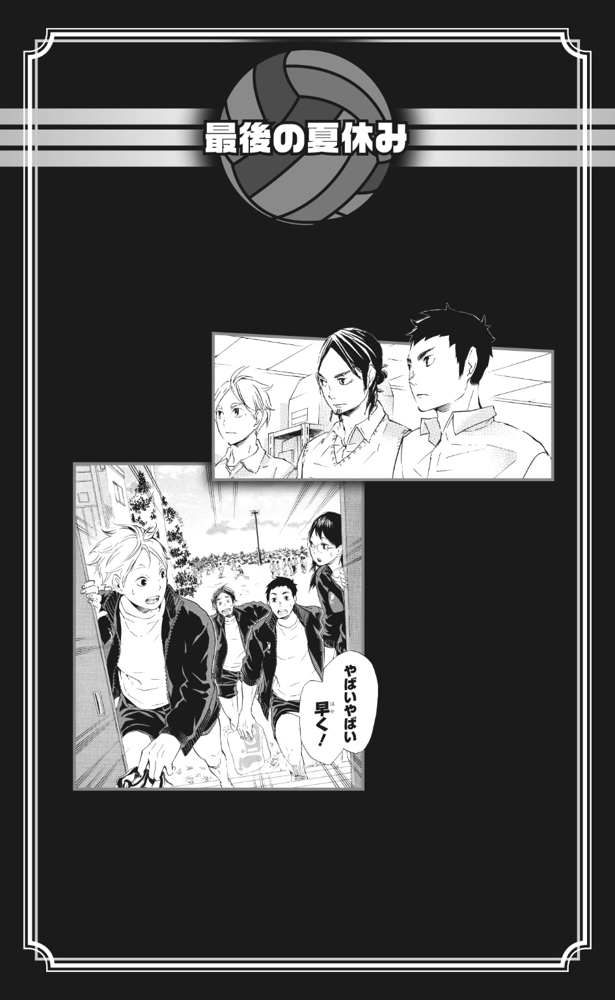
「声出せ、声！」
夏休みの朝、烏野高校排球部主将の澤村が怒鳴った。
今はレシーブ練習中、ネットを挟んで澤村と烏養コーチがボールを打ち、部員たちがひとりずつ順番にボールを返していく。影山が正確に10球を返し、次いで日向が緊張の面持ちで前に出てきた。
「サッコーイ!!」
気合いを入れて声をあげた日向が、澤村の重たいボールをなんとか返す。
「日向！ まだ手だけでとりにいってるぞ！」
「ハ、ハイ!!」
元気に返事をした日向だったが、めずらしく疲労の色を見せてあごから落ちる汗をグイッと拭いた。
暑い。
まだ日の昇りきっていない午前中にもかかわらず、男子バレー部が練習する第二体育館にはすっかり熱がこもっていた。スタミナの塊のような日向もつらそうだ。打つほうも受けるほうも、全身から汗をしたたらせて床を濡らしている。
注意深く部員たちの様子を見ていた菅原が、山口に目をとめた。顔色が悪い。菅原はネットをくぐると、山口のそばに行った。
「山口、無理すんなよ。ちょっと水飲んできな」
「......ふ、ふぁい！」
青白い顔をした山口がふらふらとコートを出ていくのを確認すると、菅原はチラリと澤村を見た。ちょうど日向が10球返したところで、次の成田が前に出ていこうとしている。その成田を「スマン、ちょっと待ってな」と制して止めると、菅原は澤村のもとへ駆けていった。
「大地、ちょっといいか？」
「なんだ？」
「あのさ、今日すごい暑いだろ......」
主将、副主将が真剣な表情で話しているのを横目で確認しながら、コーチの烏養も悩んでいた。
「......さて、どうするかな」
あと数日で、春高の一次予選を迎える。まだまだ発展途上のチームにとって、時間はいくらあっても足りなかった。こいつらは練習すればするだけ上達する。まだそれだけの伸びしろがある。言い換えれば、練習によってしか彼らは成長しないのだ。彼らだって練習したいだろう。
だが、この暑さのなかハードワークで体調を崩しては試合どころではない。万全の状態で臨まなくては、勝てる試合も落としてしまう。
このいくぶん無理しがちな高校生たちを指導するコーチの烏養もまた、悩んでいたのだった。
「おい、ちょっと集まれ！」
烏養は手を挙げた。
その声に部員たちが練習の手を止める。そしてなにやら小声で相談していた澤村と菅原、体育館の隅で汗を拭いていた山口も急いで烏養のもとに駆け寄った。
集まった部員たちの顔を見ると、烏養は短く言った。
「午後は、休みだな」
「え？」
突然の言葉に、部員たちがぽかんと口を開ける。新しい練習内容についてか、または叱責だろうと予想していた部員たちは、想定外の言葉に戸惑い、一瞬「午後休み」の意味をつかめなかったのだ。
放心する部員たちの中で、澤村と菅原のふたりがホッとした顔を見合わせていた。ふたりは暑さにバテぎみの部員たちを、少し休憩させたほうがいいんじゃないかと相談していたところだったのだ。
「今日はこの暑さだ、もうすぐ予選だっていうのに大事な体を壊しても困るからな。午後は休養に充てるように。いいな、余計なことしてないでちゃんと休めよ！ とくに日向、じーさんとこで無理な自主練とかするなよ！」
「え？ は、ハイ！」
やっと話を理解した田中と西谷が「ヤッタ！ 休みだ！」と手をとり合って飛び跳ねたのを見て、澤村も釘を刺す。
「田中、はしゃいで怪我なんかしたら......わかってるだろうな？」
背筋が冷たくなるような澤村の視線に、田中があわてて首を振った。
「し、しないっスよ！ ちゃんと休みます!!」
こうして、烏野高校バレーボール部は突然の休みを手に入れたのだった。
「お先に失礼しまーす！」
外で待っていた３年生に頭を下げて、最後の日向が部室を出ていく。
「おう、無理しないでゆっくり休めよー」
「ハイ！」
部員たちが全員出ていくのを見届けると、澤村、菅原、東峰の３年生３人は部室の鍵をかけた。そして太陽とセミの声が容赦なく降り注ぐまぶしい部室の前で、はたと顔を見合わせる。
「で、これからどうする？」
困惑を隠さずに、澤村がふたりに聞いた。
急に「休め」と言われて戸惑うのも無理はない。影山によれば、青葉城西は、休養日を設けているらしいが、みんな休日には何をしているのだろう......。
菅原も途方に暮れたように肩をすくめた。
「じゃあ、帰っておとなしく受験勉強でもしとくか」
「え！ べ、べんきょう!?」
隣で大げさに驚く東峰を見ると、菅原は「なんてな」とおどけたように笑った。そして、チラリと好奇心をのぞかせた顔で澤村に聞く。
「大地はさ、勉強してる？」
「ん？ 一応はな」
当然といった口調の澤村にショックを受けて、菅原が空をあおいだ。
「マジかよー」
「お、おい、一応だぞ、一応！」
「ホントかー？」
牽制し合う進学クラスのふたりを尻目に、まだ進路を決めかねている東峰が小さくつぶやいた。
「俺は......どっか専門でも行って手に職つけるか、それともいさぎよく就職するか......。どうしようかな......」
その言葉に、澤村がハッと振り返る。
「おい、旭、就活のときはヒゲ剃っていくんだぞ。面接相手ビビらせてもしかたないんだからな！」
「わ、わかってるよ......」
東峰があごヒゲをさすると、菅原も乗ってきた。
「逆にそのヒゲ伸ばしてさ、『御社のためなら、このヒゲを剃ってもいいと思っています！』って、その場で剃り落とすっていうのはどうかな？」
「お、そういう戦法もあるか。確かに、戦国武将好きの部長とか、そういうアピール好きそうだよな」
「だろ？」
妙に盛り上がりはじめたふたりを見つつ、東峰はヒゲをなでながらぼやいた。
「おまえら、人ごとだと思って......」
雑草もちらほら見える校舎裏の地面に、濃く短い真夏の影が落ちている。突然降って湧いた半日の夏休みをすっかりもてあましていた３人だったが、とりあえずは学校を出ることにした。
「暑いな......」
「アイスでも食うか？」
「じゃ、坂ノ下商店でも行くか」
坂ノ下商店まで来ると、店の中で後輩たちがアイスを食べながら喋っているのが見えた。その騒がしそうな光景に、３人は誰からともなく店に入るのをやめた。
「行くか......」
「ああ......」
外から見ている先輩たちの姿に気づき、ガラス越しにペコリと頭を下げた彼らに軽く手を振ると、３年生たちは新たな行き先を考えはじめた。
「どうすっかな」
「外にいるのもキツいよな」
そのとき、菅原が急に悪巧みでも思いついたような顔をしてふたりを見た。
「まあ、せっかくだしさ、ちょっと夏休みっぽいことして遊ばないか？」
「遊ぶ？」
「って、休養は？」
驚くふたりだったが、菅原の気持ちもわからないでもない。彼らは毎年夏休み返上で――というより、夏休みだからこそ連日厳しい練習に明け暮れてきたのだ。せっかく手に入れた休みを、みすみす自分の部屋で寝転んで過ごすのがもったいないという気持ちは痛いほどわかる。
「大地は、なんかしたいことある？」
そう聞かれて、ついつい真面目に考えてしまう性分の澤村が腕を組んでうなった。
「うーん、夏休みらしいことか......」
「なんかさあ、どこからか祭り囃子が聞こえてきたり、わたあめ持った浴衣の女子が歩いてきたり、その子の草履の鼻緒が目の前で切れるだろ、そこで俺が......」
目を輝かせてキョロキョロしはじめた東峰の甘酸っぱい期待を、菅原がばっさりと切り捨てた。
「そういうの現実世界にないから。そんなシチュエーションあったとしたら、その女子、計算ずくだし」
「......なんだよそれ怖いよ。あ、じゃあプールは？」
「今、水着持ってないだろ」
「だよな。大人になったら、夏休みっぽいことってできないもんだな。なんか哀しいよ、セミ捕まえに行ってもしかたないし......」
どんどん落ちこんでいく東峰を見て、澤村がバレー部主将の顔を取り戻した。
「まあ、本来は、休養のための半日休みだからな。やっぱり素直に家に帰って体を休めたほうが......」
その真っ当な台詞を、菅原が真剣な面差しで遮った。
「待てよ！ 体だけじゃなくて、ストレス解消だって休養のひとつだろ！ 俺たち最近、部のことばっかり考えてたしさ、大地もたまにはバレーのこと忘れる日があってもいいんじゃないか!? ほら、〝笑う門には福来たる〟って、昔からのことわざにもあるじゃん。遊びって大事だよ!!」
珍しくまくしたててきた菅原の勢いに、澤村と東峰が息をのんだ。そして、同時に吹き出す。
「スガ、なんか今の田中みたいだったぞ。まあいいよ、そこまで言うならちょっと遊ぶことにするか」
「何するか考えよっか」
ふたりがそう言うと、菅原が明るく笑って提案した。
「じゃあさ、とにかく心身ともにリフレッシュしながら休養するってことで、涼しいボウリング場とかどう？」
「ボウリングか......、屋内なら確かに涼しいな」
「ストレス解消にもよさそう......」
菅原に乗せられて、澤村と東峰もすっかりボウリング気分になったようだった。そして３人は一路駅前へと向かったのだった。
ドゴオオオッッ!!
地響きとともに凄まじい炸裂音が鳴り響き、そして咆哮が続く。
「......ッシャアアアアアッ!!」
10本のピンが一瞬でなぎ払われ、東峰が力強いガッツポーズを決めた。その音と声に驚いて、他のレーンの客も何事かと東峰を見た。
「あのヒゲ、スゲエな」
「やっぱり、ゴツいやつは違うな......」
豪快なストライクを讃えるように、派手な電飾がビカビカと光るレーンの手前で、東峰が子供のようにはしゃいで振り返った。
「見た？ 見た？ ストライク！」
しかし、後ろで見ていた澤村も菅原も、東峰の喜びようとは裏腹に無表情だった。
「力技だな」
「すごいんだけどさ。旭、ボール投げるなよ。バウンドしてたぞ」
ふたりの微妙なコメントに興をそがれた東峰が、巨体をシュンと縮こまらせた。
「なかなか褒められないもんだな......」
菅原がチョコミントアイスの包みをクルクルと剝がしながら笑った。
「まあ、旭っぽかったけどな。じゃ次、大地ね」
「よし！」
待ちかねたようにスッと立ち上がった澤村が、ボールの置かれた機械に手を伸ばした。そして備えつけのタオルでキュキュッとボールを拭き、慣れた手つきで吹き出す風に手をかざす。
「なんでそんな手慣れてるんだよ！」
「え、なにそれ、その風って機械の排気じゃないの？」
騒ぎ立てる東峰と菅原をチラリと見ると、澤村は重々しくこたえた。
「これは、ボールをしっかり持てるように手を乾かしてるんだ。正式名称はハンドドライヤーだ」
へえ、と感心するふたりを見ると、澤村は胸の前でボールを構えた。そしてゆっくりリズミカルに助走しながら、腕を後ろにスイングさせる。
「おお、流れるようなフォーム！」
「すでに上手そう！」
ふたりの歓声を背中に聞きながら、澤村が腕を振り下ろした。リリースされたボールは真っすぐ吸いこまれるようにレーンの中央を進み、スパーンと軽やかな音を立てて、全てのピンを倒した。見事なストライクだ。
「なんだよそれ！ なんでそんな華麗なんだよ！」
「大地、おまえ、さてはマイボール持ってるだろ！」
淡々とした表情で戻ってくる澤村を、ふたりが興奮のあまり笑いながらからかう。しかし澤村はいたって真面目な顔でレーンを振り返った。
「いや、１投目はまずまずってところかな。手首のスナップが足りなかったか......」
納得いかない様子で首をひねる澤村に、東峰が思わず口をはさんだ。
「さらに上をめざすのかよ！」
レーンの奥で新たなピンが設置され、澤村のボールが３人の前にゴロリと戻ってくる。
最後は菅原だ。
「じゃ、ちょっとコレ持ってて」
菅原は持っていた食べかけのアイスを東峰に渡すと、ボールを手にして言う。
「ボウリングの球って、こんなに重かったっけ？」
そして澤村の真似をしてボールを拭き、吹き上がる風にぎこちなく手を当てて乾かしてみる。
「ふたりともストライクだし、俺だけガーターってわけにはいかないよな。プレッシャー感じる......」
菅原は真剣な表情でレーンの前に立った。数歩助走すると、ボールを持った手を後ろにスイングさせて叫んだ。
「なぎ払えーッ！」
と、同時に予想外のことが起きた。菅原の手からボールがすっぽ抜けて、後ろへ飛んだのだ。
「うわ!?」
あわてて振り返った菅原が見たものは、反射的にボールの下に飛びこんでレシーブしようとした澤村と、それを抱えて止める東峰の姿だった。
ドゴッと重たい音を立ててボールが床に落ちると、東峰が叫ぶ。
「大地！ それ、レシーブできないから！ 骨折れるから！」
「ああ、そうか......、つい......」
「ついじゃないよ！」
東峰がとっさに投げ捨てたのだろう、菅原のチョコミントアイスが床に落ちて、緑と茶色のマーブル模様を作っていく。あわててアイスを拾いながら、菅原がふたりに両手を合わせてあやまった。
「ほんとゴメン！ 俺、ボウリングって小学校以来でさ！ ちょっとやってみたかったんだよね......」
「それで、ボウリングって言ったのか......」
東峰が苦笑して床掃除を手伝ったが、澤村は落ちたボールを見たままギュッと眉間にしわを寄せた。
「しかたないな......」
そうつぶやいてゆっくり立ち上がると、澤村はギラリと目を光らせてふたりをにらんだ。
「この際、ふたりには俺がみっちり教えるとするか」
「え!?」
「み、みっちりって、なんだよ......!?」
菅原と東峰が顔を見合わせる。もちろんふたりは知っていた、澤村の「みっちり」がどれだけ厳しいシゴキなのかを......。
「なんかすごい腕痛いんだけど......」
「タン、タタン、スッのタイミングでボールをリリース......、タン、タタン、スッのタイミングでボールをリリース......」
リフレッシュとストレス解消のためのボウリングだったはずが、会計をすませた３人はすっかりヘトヘトに疲れきっていた。
「ちょっとやりすぎたか......」
「ちょっとっていうか、旭見ろよ。再起不能の一歩手前だぞ？」
「タン、タタン、スッのタイミングでボールをリリース......、リリース......」
澤村に叩きこまれた、助走とボールを放すタイミングをブツブツつぶやきつづける東峰に気づき、澤村も申し訳なさそうな顔になる。
「なんかスマン。つい......」
ボウリング場の自動ドアが開くと、ムワッと熱い外気が押し寄せてきて３人の行く手を阻んだ。あまりの暑さに、東峰も正気に戻る。
「うっわ、外暑いな......。出たくないけど、ここにいたらずっと大地とボウリングか......」
「これは、部活休みになるだけの暑さだな」
東峰と澤村が思わず一歩後ろに下がり、ふたたびドアが閉まった。菅原が、Ｔシャツの襟元からパタパタと風を送りながら言う。
「暑いし、かき氷でも食うべー」
「そうだな、スガはさっきアイス食い損ねたしな」
「......ごめんな」
頭を下げる東峰に、菅原が笑う。
「気にすんな、っていうか、俺がボール飛ばしたせいだしな！」
３人は覚悟を決めて外に出ると、陽炎の立つ熱いアスファルトを踏んで近くの甘味処へ向かった。
「宇治金時だな」
壁にかけられた扇風機の風を顔に受けながら、澤村はかき氷のメニューをチラリと見て言った。
古く小さな店内では、すっかり日に焼けた夏休みの子供たちがかき氷の山と格闘している。小さなスプーンで上手くすくえずに床に落として叫んだり、一気にかきこんで「痛え！」と頭を抱えたりと騒がしい。
「じゃあ、俺ブルーハワイにしよ」
菅原がそう言ってメニューを東峰に渡すと、澤村が聞いた。
「ブルーハワイって、そもそも何味なんだ？」
「え、なんだろう。なんか、爽やかな南国の海をイメージしたみたいな？」
「海？ 塩味なのか？」
「......そんなわけないべ」
テーブルに置いてあったうちわをパタパタと使いながら、ブルーハワイの謎について語りだした澤村と菅原の前で、東峰はまだメニューをにらみつづけていた。
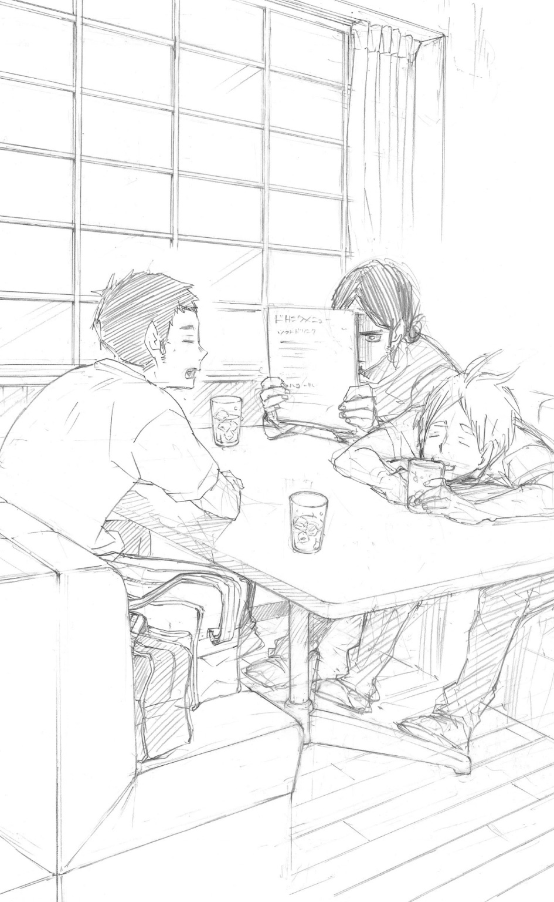
「イチゴミルクかレモンミルクか、でもメロンミルクも捨てがたいし......。え、50円プラスでダブルにもできるのか......」
窓際の小さなテーブルで３人が身を寄せ合っていると、外から窓ガラスがコンコンと叩かれた。
「ん？」
３人が顔を上げて窓を見る。外からヒョコッと顔をのぞかせていたのは、引退した元女子バレー部主将の道宮だった。
「よっ！」
すすけたガラス越しに、道宮が片手をあげて笑顔を見せた。Ｔシャツとミニスカートにリュックサック――私服だ。
制服かジャージ、そしてユニフォームの印象しかない道宮の私服姿に、３人とも少なからず緊張してしまう。
「お、おう、久しぶり。終業式以来か？」
澤村が窓を開けると、道宮は窓枠に寄りかかって聞いた。
「そうだね。ねえ、今日練習は？ あんたら３人がサボりのわけないけどさ」
「ああ、この暑さだろ？ 烏養さんが午後の練習休みにしてくれたんだ」
そう応えた澤村に、菅原が隣からつけ足す。
「で、３人で夏休みっぽいことしてたってワケ」
道宮が笑った。
「それでかき氷食べてるんだ。王道の夏休みだね」
「道宮は？」
澤村が聞くと、道宮はちょっと照れたような顔を見せた。
「私、教習所！ こないだ18歳になったしね」
３人が同時に「おお！」と感嘆の声を漏らした。
「大人だ......」
「俺たちはかき氷食ってていいのか......」
打ちひしがれる３人を見てクスッと笑うと、道宮は「じゃ」と背を伸ばした。
「私、これからおばあちゃんちなんだ。あ、夏休みっぽいことっていうなら、宿題もするんだぞ！ 私、手伝えないからね!!」
そう言って大きく手を振り、道宮は陽炎の揺れる横断歩道を渡っていった。
「......私服だったな」
菅原がぼんやりつぶやくと、東峰も呆けた顔でうなずく。
「Ｔシャツなのに、レースついてたもんな」
扇風機の風に、カウンターの上に吊られた風鈴がチリンチリンと鳴る。そして、澤村がひとりごとのようにポツリと言った。
「引退すると、練習がないんだよな」
澤村の言葉に、菅原と東峰がハッと我に返った。
「そうだな、私服ってそういうことだよな」
「毎日が今日みたいなのか、俺、何やったらいいかわかんないな......」
引退の２文字をリアルに突きつけられたように感じて、ふたりは主将の言葉を待った。しかし澤村は当然のような顔をして言う。
「まあ３年だし、勉強とか就活とか、まあ免許取るとか、いろいろ忙しいんだろうけどな」
「受験か......」
「将来な......」
そんなに遠くもない未来のはずなのに、なんだかまったく見当もつかない。
それもそのはずだ、数日後に控えた春高予選に向けての練習だって、まだ手探りの状態なのだ。ひとりひとりの技術だってまだまだ磨くことができるし、新しい戦術だって考えられる。
発展途上の烏野高校バレーボール部は、明日のことだって予測できない。
もうすぐ行われる一次予選、それを勝ち抜けば10月には代表決定戦、そしてその先には......。彼らのめざす先は、まだまだ不確かでぼんやりとしか見えない。ただひとつひとつの試合を着実に勝ち進むことでしか、先を見ることができないのだ。
「まずは、予選突破だよな」
澤村が低くつぶやく。菅原も東峰も思いは同じだった。予選突破、全てはそこからはじまるのだ。
「そろそろ陽も落ちてきたようだし......、かき氷食ったら学校戻ってちょっとフォーメーションの確認でもするか。もう十分休んだし、練習するわけじゃないからいいよな？」
主将の言葉に、菅原がうれしそうに笑った。
「俺もそう言おうと思ってた！」
「お、俺だって!!」
あわてる東峰を見て、ふたりが笑う。そして３人は、やっとかき氷を頼んだのだった。
「すいませーん、注文おねがいしまーす！ 宇治金時とブルーハワイと、あと......旭、どうする？」
「え？ 俺、ちょっと待って！ ええと、イチゴとレモンのダブルでミルク......じゃなくて、イチゴとメロンにミルクで！」
いそいで学校へ戻った３人が最初に会ったのは、２年生の５人だった。校門を入ったところで、前を歩いていた５人を見つけたのだ。
「おまえら、何やってんだ......!?」
澤村の声に振り向いた田中、西谷たち２年生は、あわてて手に持っていたアイスをガリガリと食べて飲みこんだ。
「何しに来たんだ？」
ふたたび聞かれて、田中は助けを求めるように縁下を見る。
「いや、俺らは......なんていうか......」
縁下が、しかたなさそうに２年生を代表して言った。
「あの、体育館でちょっと遊ぼうか、って......。いや、遊ぶっていうか、その......ちょっとボールで遊ぶだけなら『練習』じゃないからいいかなーって......」
イタズラが見つかったような顔を並べている後輩たちを見て、３年生が顔を見合わせた。彼らも、この二年生たちとだいたい同じことを考えていたのだ。
「......まあ、とりあえず体育館に行くか」
「ウス！」
そして、８人は夕方の第二体育館に向かったのだった。なんとなくきまりの悪い顔で歩く彼らの耳に、そのうち聞き慣れた声が聞こえてきた。
「日向、このボゲ！」
怒鳴り声は、もちろん第二体育館のほうから聞こえてくる。
「今の、影山だよな」
「まさかひとりで叫んでるってことはないだろうから、日向もいるんだよな」
「１年生、さっき先に坂ノ下商店出てったけど、学校戻ってたのか......」
２、３年生は体育館へ急ぐと、風を入れるため全開になっている扉から中をのぞいた。
「こいつら......」
体育館の中には、１年生全員が揃っていたのだった。彼らは上級生たちが戻ってきたことにも気づかず、コートの真ん中に固まって何かのぞきこんでいる。どうやら月島のスマホを見ているようだ。
「おお、回ってる！ すげー、スマホすげー、なんでもあるんだな！」
「動画はスマホにあるんじゃなくて、ネットにあるんだけど。ちょっと日向、画面ベタベタ触んないでくれる......」
「日向はもっと子供用の練習動画見たほうがわかるんじゃないの？」
「なんだと！」
「いや、そのほうがわかりやすいかと思って......」
「おまえは基礎がなってないんだから、まずは基礎からだからな」
「わかってるよ！ でもそれだと練習になっちゃうだろ！」
４人しかいないのに十分に騒がしい。澤村は小さくため息をついてから、中に向かって声をかけた。
「おまえら、何やってんだ？」
主将の声に部員たちが一斉に振り返った。騒がしかった体育館がシンと静かになる。そして全員があわてて扉の前に集まってきた。
日向がガチガチに緊張しながらこたえる。
「おれ、あのローリングサンダーの練習をして......！ いや、練習はダメだから練習じゃなくて！ ええと......、影山もなんか言えよ！」
「......日向が回転レシーブをできるようになりたいって言って、これならギリギリ練習ではなくて遊びかな、と思ったので......」
隣の影山が説明する後ろで、月島がつぶやく。
「だから帰ろうって言ったのに......」
「ツッキー！」
澤村は体育館に並ぶ１年生４人を見て、それから後ろにずらりと並んでいる２年生、そして菅原と東峰の姿を見ると深いため息をついた。
「俺たち、せっかくの夏休みに何やってんだろうな......」
「まあまあ、みんな練習熱心っていうことでさ！」
菅原が笑顔でフォローすると、澤村は「そうか......」と、気をとり直して声をかけた。
「......じゃあせっかくだし、全員でミーティングでもしていくか！」
「あス!!」
烏野高校バレーボール部が、声をあげた。３年生が苦笑しながら顔を見合わせる。
「俺たちは、どうしようもないな......」
「ま、バレーだけっていうのもいいじゃない」
「結局、こうやって集まってバレーして、それだけだなぁ」
――それだけ。
それだけのなかに、彼らはどれだけの想いを詰めこんできたのだろう。
もうすぐ、春高の一次予選が行われる。１試合目に負ければ、彼ら３年生の部活動はそこで終わりだ。しかし３人に悲壮感はない。自ら前へ進もうとする者は皆、顔を上げているものだから――。
ただ先を見て、一歩踏み出す。
毎日の小さな一歩の積み重ねだけが、未来への道をつくるのだ。
最初で最後の高校３年生の夏。今、彼らにできることはその一歩を踏み出すことだけだった。
烏の家 第15怪
「ひとつ前の住人と肖像画の少女」
３人家族がやってくる数か月前、館には若い男がひとりで住んでいた。呪われた館ということは承知のうえで住み着いた、物好きな男だった。
「実家にいても、結婚しろとか言われてめんどくさいだけだしな......。家賃さえ安ければそれでいいさ。幽霊の１匹２匹、ふん捕まえて酒の相手にでもすりゃいいだろ」
金髪にピアスの若い男はさほど怖がる様子もなく、呪われた館で楽しく過ごしていた。飛びまわる家具は「うっとうしい......！」と叩きこわし、大量に現れるヒナガラスはカラーヒヨコにして近所の子供に売った。
怪奇現象を次々とねじ伏せた彼だったが、ひとつ苦手な現象があった。
「ふええええ、ここから出してくださぁい......」
それは肖像画の少女が夜な夜な泣きだすことだった。湿っぽくなると、酒がまずくなる。
「......おまえはそろそろ受け入れろよ、運命を」
男は缶ビール片手に、閉じこめられた少女に説教する。
「す、スミマセン！ はぁ、私がバカでオケラなせいでこんなことに......。素敵な洋館だなーってフラフラ入ったら出られなくなって......。後先考えなさいって、いつもお母さんに叱られてたのに。ふええええ！」
「泣くな泣くな、泣けば出られるもんでもないだろうが」
男はグビリとビールを飲み干すと、ニヤリと笑って少女に言った。
「どうだ？ いっそ、その絵も叩きこわしてやろうか？ そしたら出られるかもしれないぞ？」
「そ、それ、私もろとも粉々になる可能性は......」
「五分五分ってところだな」
少女の顔が固まる。
「か、考えさせていただければ......」
男は鼻で笑うと、２本目の缶ビールを開けた。
「で、おまえ、いつからその中にいるんだ？」
「かれこれ、１００年ほどですね」
さらりと応えた少女をまじまじと見て、男は頭をかいた。
「おい、それ、出てきたところで生きてられるのか？」
「う......！」
「まあ、決心つくまで、酒の相手にでもなってくれや」
しかし、その男ももういなくなってしまった。家賃が払えなくなって実家に帰ったのだ。
男は、家を出る前に絵に向かって言った。
「最後に、エクソシスト調べて呼んでやるよ。そいつらがニセモノなら引きずりこめばいいし、ホンモノなら助かるかもしれないだろ。それじゃあ元気でやれよ、ありがとな」
「......こ、こちらこそ、ありがとうございます!!」
絵の中の少女は、手を振る男の背中にペコリと頭を下げた。それきり男が戻ってくることはなかった。
〈続〉
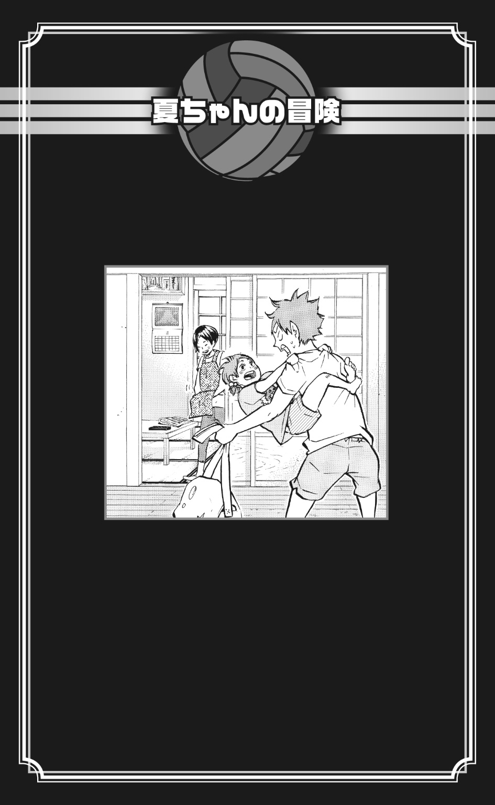
高校生たちが夏を謳歌している８月は、もちろん小学生も夏休み。日向が部活に行っているあいだ、妹の夏ちゃんはいったいどんな夏休みを過ごしているのか......。
ちょっと日向の家をのぞいてみることにしましょう――。
縁側からやさしい風が吹いてきて、ちりんと風鈴が鳴りました。広い和室の畳の上、ちいさな女の子が眠っています。手にぎゅっとタオルケットをにぎっていますが、おや、おへそが見えています。
夏休みの午後、夏ちゃんはお昼寝の最中でした。お昼ごはんを食べたら、眠たくなってしまったのです。
「夏、買い物行くけどいっしょに行く？」
お母さんの声が聞こえてきます。でも夏ちゃんは眠ったまま。なにやらムニャッと寝言を言って、ごろんと寝返りを打ちました。
縁側にはブタの素焼きに入った蚊取り線香が置いてありますが、夏ちゃんの足は何か所かポツポツと赤くなっています。夏ちゃんは眠ったままポリポリとふくらはぎをかきました。
「おーい、夏やーい」
ふすまが開いて、お母さんが和室に入ってきました。
「そろそろ起きなさーい。そんなに寝てたら、夜に眠れなくなるよ？」
そう言って、夏ちゃんのほっぺをポンポンと軽くたたきます。
「......ん、にゃ」
夏ちゃんはムクッと起き上がってまだ眠そうな目をこすると、赤く畳のあとがついたほっぺをかきました。そして、言います。
「......おしっこ」
「早く行ってらっしゃい。お母さん買い物に行くけど、いっしょに行く？」
「うん！」
お出かけがうれしくて、パッと目が覚めたようです。夏ちゃんは元気に立ち上がると、パタパタ走って和室を出ていきました。
「おべんじょべーん!!」
「こら、夏！」
お母さんが廊下に向かってしかりましたが、廊下からはバタンとトイレのドアが閉まる音がするだけです。
「すぐ翔陽の真似するんだから......」
お母さんはこまった顔をして、茶だんすの上に置いてある家と車のカギをとりました。
翔陽というのは、夏ちゃんの兄ちゃん。たまに中学生に間違えられるけれど、れっきとした高校１年生です。今は夏休みですが、毎日学校に行っています。お勉強ではなくて「ブカツ」をしているのです。夏ちゃんも兄ちゃんを応援していますが、せっかくの夏休みに大好きな兄ちゃんと遊べなくてちょっとふくれています。この間なんて、「ガッシュク」で１週間ちかくもお家を留守にしていたんですよ。
夏ちゃんはさっき、お昼ごはんのときにお母さんに言ったんです。
「なんかさいきん、兄ちゃんつめたいみたい」
するとお母さんはおかしそうに笑いました。
「どこで覚えてくるのよ、そんな言葉」
こどもあつかいされたようで、夏ちゃんはまたふくれました。夏ちゃんはもう幼稚園じゃありません、小学生のお姉さんです。それなのに、お母さんや兄ちゃんはすぐこどもあつかいするのですから「わかってないな」と夏ちゃんは思うのです。
お気に入りのリュックを背負うと、夏ちゃんはお母さんの車に乗りました。そして、お母さんに言われる前にきちんとシートベルトをしめました。
ブルンとエンジンが鳴って車が動きだします。夏ちゃんはいつものように窓におでこをくっつけて外を見ることにしました。
道路にはいろんな標識があっておもしろいのです。自転車やこどもの絵が描いてあるものを見つけるとうれしくなりますし、まえ、山の中ではサルの絵が描いてある標識も見つけました。
いまは買い物に行くだけだから、もちろん山には行きませんけれど、夏ちゃんはごきげんです。もしかして、かわいい消しゴムやシール、それにお菓子を買ってもらえるかもしれないのですから。
夏ちゃんが道路の標識を探していると、車はすぐにいつも買い物をする商店街に着きました。
すると「あれ？」という声がしたので、夏ちゃんは道路の標識探しをやめて運転席のお母さんを見ました。
「そうか、しまった、お盆休みだ」
お母さんが言います。夏ちゃんは、外に並ぶお店を見ました。
コロッケを買うお肉屋さんも、たまにキャンディーをくれる八百屋さんも、裏にかわいい犬のラッキーがいる床屋さんも、みんなお休みでシャッターが下りています。
「どうしようかな」
こまった顔のお母さんを見ると夏ちゃんも心配になってしまって、蚊に刺された足をすこし強くかきました。でも、お母さんはニッコリ笑って言いました。
「じゃあ、ちょっと遠くのスーパーまで行こうか」
「うん！」
夏ちゃんはうれしくなりました。遠くのスーパーにはフードコートがあるのです、もしかしたらソフトクリームを買ってもらえるかもしれません。
すると、お母さんはさらにうれしいことを言いました。
「......そうだ！ せっかくだし、翔陽の学校のほうにあるお店に行ってみよっか。たまには新規開拓しなきゃね」
「え、兄ちゃんとこいくの!?」
夏ちゃんの心臓がドキンと大きく鳴りました。兄ちゃんの行く学校は山をひとつ越えたところにあって、夏ちゃんはまだ行ったことがありません。
「学校には行かないよ？」
お母さんが念を押しましたが、夏ちゃんはもうすっかりドキドキしていました。
「でも、ばったり兄ちゃんにあうかもしれないよね！」
「そうかもね。じゃ、行ってみようか！」
そう言うと、お母さんはカッチカッチとウインカーを出して、大好きな兄ちゃんのいる烏野に向かって車を発進させたのです。
車は急な坂道を頑張ってのぼっています。ブウンといつもより大きな音で、ちょっと苦しそうです。お母さんが言いました。
「翔陽は、毎日こんな坂を自転車でのぼってるの......？」
去年、補助輪なしで自転車に乗れるようになった夏ちゃんは、ハンドルをにぎるお母さんに言いました。
「アタシもこんど、自転車できてもいい？」
「......ぜったいダメだからね」
「えー！」
「自転車ごと下までころがり落ちて、メチャクチャになっちゃうよ？」
お母さんの言い方がおかしくて、「またこどもあつかいだ」と怒っていたはずの夏ちゃんも、つい笑ってしまいました。
山を越えて下り坂を抜けると、町に出ました。いつもの商店街と似ているようで、少し違います。夏ちゃんはワクワクしながら烏野の町を眺めました。
「よし、じゃあ、あのスーパーに行こうか」
お母さんが指さした先には、スーパーマーケットがありました。その看板を見て、夏ちゃんは「えっ！」と声をあげてしまいました。
「ブタさんが......」
夏ちゃんが驚くのもむりはありません。そのスーパーの看板には、なんと輪切りになったブタさんの絵が描かれていたのです。しかも「食べてください」とばかりに、ごていねいにお皿の上に乗っているのです
「ちょっと、残酷というかシュールというか......。でもきっとお肉が自慢なのよ、おいしいベーコンあるかもよ？」
お母さんも看板に気づいてそう言いながら、駐車場にスルリと車を入れました。夏ちゃんは、カリカリじゅわじゅわのベーコンエッグやアスパラのベーコン巻きのことを考えて、なんだかお腹がすいてきたような気がしました。
さて、夏ちゃんとお母さんは嶋田マートに入りました。お店の中は冷房がきいていてとっても涼しく、快適でした。
「さてと、知らないお店は大変だぞ？」
お母さんがそう言って笑いました。たしかに、よく行くお店なら、どこにお菓子があってどこにヨーグルトやプリンがあるのか知っていますが、はじめてのお店ではぜんぶ一から探さなくてはいけません。
「じゃあ、手分けしていこうか。お母さんはこっちで野菜を見てるから、夏はたまごを探してきてちょうだい」
「ラジャー、りょーかい！」
夏ちゃんは敬礼すると、たまごをさがしに出かけました。
「たまご、たまご......」
野菜と果物にはさまれた通路から、お魚の広場に出ると、たまごの棚を見つけました。夏ちゃんは得意になって言いました。
「すぐ見つけたもんね！」
そして、たまごのパックをとろうとした手がぴたっととまりました。たまごは一種類だけじゃなくて、何種類もあるのです。ちいさなうずらのたまごや温泉たまごのことは放っておくとしても、茶色のたまごや、ネットに入ったたまご、たくさん入ったものや少しだけのものなどあって夏ちゃんはこまってしまいました。
「６こで１４８円、10こで１９８円、これは......５４８円。なんか高い」
夏ちゃんは、たまごの値札をじーっとにらみましたが、どれを持っていったらいいか、かいもく見当がつきません。
夏ちゃんは、お母さんや先生が言っていたことを思い出しました。
――こまったときには大人にききなさい。
そうです。駅でこまったら駅員さん、バスでこまったら運転手さん、お店でこまったときは店員さんに行儀よく質問すればいいのです。
夏ちゃんはお店の人をさがして、キョロキョロ辺りを見まわしました。
そして、輪切りブタのエプロンをつけたメガネのお兄さんを見つけました。お兄さんは、魚のパックに「タイムセール」のシールを貼っているところだったので、夏ちゃんは話しかけてもいいのかな？ とちょっと迷いましたが、お母さんにたまごを持っていくために、勇気を出して声をかけました。
「あの！ すいません！ どのたまごがいいたまごですか？」
「え？」
メガネのお兄さんが振り向きました。実は、このお兄さんは商店街バレーボールチームの嶋田さんですが、もちろん夏ちゃんは知らないのです。
「たまごかい？ ええと、何を作るのかな？」
「え」
夏ちゃんは、またこまってしまいました。今日の晩ごはんが何かは聞いていないのです。でも逃げるわけにはいきません。夏ちゃんはうーんと考えてから、言いました。
「ええと......、あの、兄ちゃんはたまごかけごはんが好きなんですけど、きょうのごはんはわかりません！」
すると、メガネのお兄さんはニッコリ笑いました。
「じゃあ、お兄ちゃんがいっぱい食べられるように、この特売10個入り、おひとりさま１パック限りがいいんじゃないかな？」
夏ちゃんはホッとして、特売10個入り、おひとりさま１パック限りのたまごを手にとると、メガネのお兄さんに頭を下げました。
「ありがとう！」
「落とさないようにねー」
夏ちゃんはたまごを抱えてスーパーの中を歩きます。急いでお母さんのところへ行きたいけれど、お兄さんの言うとおり落としてはいけないので、忍者のようにソロソロと歩きました。
「清水先輩、あの忍者、オコジョです」
「ごめん、仁花ちゃん、もう１回言ってもらえるかな」
「あの子です......」
声をひそめて喋っているのは烏野高校バレー部マネージャーのふたりです。大事にたまごを抱えてソロソロと歩いている夏ちゃんを指さしたのは１年生の谷地さん、となりにいるメガネのお姉さんは３年生の清水さんです。
「あの子のワンピース見ましたか？ オコジョ柄でした」
「オコジョって、何？」
清水さんが聞くと、谷地さんが教えてくれました。
「イタチの仲間です。こないだ日向のお弁当袋もたしかオコジョ柄だったんです。局地的な人気なのかも......」
清水さんは、いつかの試合のことを思い出しました。１年生の日向がかわいいお弁当袋を持っていたような気がしますが、その柄がオコジョかどうかまでは覚えていません。
「仁花ちゃん、よく知ってるね」
「......あ、なんかスイマセン！ 私ひとり興奮してしまって！ あ、特売のを発見しました!!」
谷地さんが、大きなカゴにたくさん入ったスポーツドリンクの箱を見つけました。清水さんが真剣な顔をして言います。
「ひとり３個まで......。外の東峰も呼ぼうか」
「ハイ!!」
谷地さんが携帯電話を取り出しました。
夏ちゃんは野菜コーナーにいるお母さんを見つけると、たまごをそっとカゴに入れました。ここであわてて割ってしまっては、今までの苦労が水の泡です。夏ちゃんは、細心の注意を払いました。
「あら、ありがとね、夏。じゃあ、レジに行こうか」
ひと仕事おえた夏ちゃんは、やっとホーッと息をつきました。
しかし、レジは行列になっていてなかなか進みません。お母さんにくっついていた夏ちゃんはつまらなくなってしまいました。ヒマつぶしにカゴの中をのぞいたりするうち、夏ちゃんは、ふと、いいことを思いつきました。そしてソッと列を抜け出したのです。
「おかし！ おかし！」
そうです。そっとお菓子を持ってきて、お母さんのカゴに入れてしまおうと思ったのです。いそがないと、レジの順番がきてしまいます。夏ちゃんは、お菓子売り場を探して走りだしました。
そのときです。
「きゃ！」
「おっと」
夏ちゃんは、歩いていた人にぶつかってしまいました。あやまろうとして顔を上げた夏ちゃんは、びっくりしてしまいました。
ぶつかったのは、とても大きなヒゲの男の人だったのです。
「ひげ......」
おどろいて動けなくなってしまった夏ちゃんに、ヒゲの大男が覆い被さるように近づいてきます。
「だ、大丈夫？ 俺、ケータイ見てて......」
ヒゲの大男は、もちろん烏野高校バレー部のエース東峰さんでした。買い出しの荷物持ち要員として呼ばれていたのですが、とりあえず清算が済むまではすみっこに追いやられていたのです。そして、今、谷地さんからメールで呼び出されたところだったのです。
心のやさしい東峰さんはちいさな女の子にぶつかってしまって、たいそう申し訳ない気持ちになりました。
そして以前どこかで聞いたような気がする「こどもと接するときはこどもと同じ目線で」という言葉を思い出したのです。
でもそれは逆効果でした、東峰さんのヒゲだらけのお顔がヌッと近づいてきて、夏ちゃんはすっかりおびえきってしまったのです。
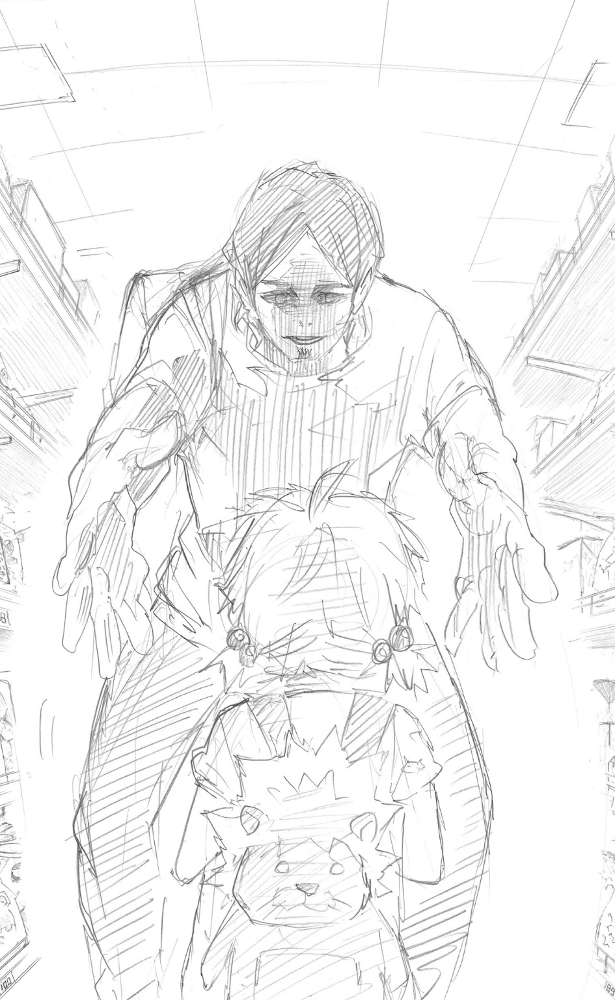
「ひ、ひげが......、ひげ......、ふ、ふぎゃああああああ!!」
夏ちゃんは顔をクシャッとゆがめると、泣きながらお母さんのところへ走っていきました。
ごめんなさいごめんなさい！ だまっておかしを持ってこようとしてごめんなさい！ もう二度と勝手なことはしませんから！
夏ちゃんは、そう叫びたいくらいでした。でも息が詰まって、声なんか出ませんでした。とにかくはやくお母さんの顔を見たくて、夏ちゃんは走りました。
メールをしてもやってこない東峰さんにしびれを切らして、マネージャーのふたりは東峰さんを探していました。そして、ビエーッと泣きながら走っていく夏ちゃんと、あたふたしている東峰さんを見つけたのです。
谷地さんが、おずおずと清水さんの顔を見ます。
「あ、あの感じはもしや......」
「犯人は、あいつ以外にいないね」
ふたりとも、おっかない顔をして東峰さんのところへ駆け寄りました。その顔を見て、東峰さんはすっかり怖くなってしまいました。
「ち、ちが......俺が泣かしたんじゃ......あの子が勝手に......!!」
言い訳する東峰さんをキッとにらみつけて、清水さんが言います。
「......最低」
「えええええええっ!!」
東峰さんの大きな体が、シュンとちいさくしぼみました。
谷地さんも、あわててあやまります。
「スイマセン！ きっと私がメールなんかして急がせたせいで......！」
「いや、谷っちゃんは悪くないから！ 俺が......俺の顔がぜんぶ悪いんだよ......」
「東峰さんを呼ばずに、私が何度もレジに並べばよかったんですう!!」
「お、俺が、俺がこんな風体に生まれたから......!!」
いつまでもペコペコとあやまり合うふたりに、清水さんが言いました。
「はい、そこまで。買い物戻ろう」
すたすた歩いていく清水さんを、ふたりがあわてて追いかけます。
「は、ハイ！」
「待ってくれよお......！」
夏ちゃんとお母さんは、家に帰るといっしょに晩ごはんの準備をしました。夏ちゃんはもう小学生なので、包丁だってコンロの火だって使わせてもらえるんです。
スーパーマーケットで泣いて戻ってきた夏ちゃんは、お母さんにきつくしかられました。
「こら、夏、勝手にいなくなっちゃダメでしょ！」
「う、ご、ごべんなさい!!」
しゃくり上げながらあやまった夏ちゃんですから、家ではいいところを見せなくてはいけません。ちゃんとお手伝いのできるお姉さんだということをお母さんにしょうめいするのです。
お母さんが揚げた、ゆでたまご入りのメンチカツを夏ちゃんは半分に切りました。やけどしないように、ちゃんとさめるのを待ってから切りました。茶色いメンチカツにゆっくり包丁を入れると、たまごの白と黄色があらわれてとてもきれいです。
「おいしそう！」
お母さんはアスパラガスのベーコン巻きもつくってくれています。フライパンの中で、油がおいしそうにジュウと鳴っています。夏ちゃんはすっかりお腹がすいてしまいました。
夕食は、お母さんとふたりで先に食べます。食べているあいだにお父さんや兄ちゃんが帰ってくることもあります。
ちゃぶ台にお皿を並べて、ふたりで「いただきます」をして食べはじめました。夏ちゃんは、さっそくゆでたまご入りのメンチカツを食べました。
「おいしい!!」
なんだか、いつものたまごよりおいしい気がします。お味噌汁のお豆腐やおねぎもふだんよりおいしい気がしましたが、今日のお店で買ったものかどうかはわかりません。
夏ちゃんがもぐもぐとごはんを食べていると、ガラガラッと玄関の開く音がしました。
「ただいまー」
「あ、兄ちゃんだ！」
夏ちゃんはパッと立ちあがって、玄関へかけていきました。
「こら、夏、食べてるときに席立たないの！」
お母さんのしかる声が聞こえましたが、夏ちゃんははやく兄ちゃんに会いたくてしかたがないのです。玄関で靴を脱いでいる兄ちゃんの背中に飛びかかると、夏ちゃんは言いました。
「兄ちゃん！ きょうね、きょうのたまごおいしいんだよ！」
「え？ なんで？ 夏、ちょっと、のど苦しい！ シャツのえりが！ のどに！」
苦しそうな兄ちゃんから降りて、夏ちゃんはカバンを引っ張ります。
「ねえ、たまごかけごはんにする？ するよね？」
「え、ちょっと待ってって、あ、でもいいにおいする！ おれもごはん！ 大盛り！」
引っ張られながらそう言うと、茶の間からお母さんの声がしました。
「翔陽、ちゃんと手洗いなさいよ！」
「はーい！」
洗面台へ向かう兄ちゃんの後ろを、夏ちゃんもくっついていきます。ふたりでパタパタと廊下を歩きながら、夏ちゃんは言いました。
「兄ちゃん！ きょう、兄ちゃんの学校のほう行ったんだよ？」
「え？ なんで？ 何しに？」
「ひげが、こわかった......」
「はァ？ 順番に言って、順番！」
兄ちゃんが帰ってくると、家はすっかりにぎやかになりました。家のなかには、おいしい晩ごはんのにおいがいっぱいです。
夏の夜、これから家族の時間がはじまるのです。
烏の家 最終怪
「正体」
帰っていく３人の姿が見えなくなると、親子は小さくため息をついて館に戻った。ついさっきここに着いたときには「お城みたい！」と浮かれていたが、親子だけになるとガランとして物悲しい。招かれざる客もいなくなると寂しいものだった。
親子３人は困ったような顔を見合わせたが、とりあえずキッチンでお湯を沸かすことにした。
「夏、カップ用意してくれるか。そっちの段ボールに入ってるはずだから」
「うん！」
妹がカップを探す隣で、兄が紅茶を探す。
「あれ......。ねえ、父さん、ティーバッグしか見つかんないや」
「かまわないさ。さあ、お湯が沸いたよ、おいで」
父親が、カップと紅茶のティーバッグを持った子供たちを呼んで紅茶を淹れる。子供たちは、ヤカンからカップに湯を注ぐ父親をじっと見ていた。キッチンに紅茶の香りが広がる。
「やっとひと休みだな」
あちらこちらにダンボール箱が置かれたリビングで、３人はあたたかな紅茶を飲んだ。ちいさな声で話をしているうち、３人のシルエットはだんだんぼやけていくようだった――。
「なかなか静かには暮らせないもんだなあ......。あの不動産屋のおっちゃんに騙されたのかな、あのおっちゃんの頭、あからさまにヅラだったもんな......」
そう言って紅茶を飲む父親の体は、いつのまにかフランケンシュタインのそれになっていた。もともと大きな体だったが、さらにひとまわり大きくなっている。
「だから！ 家賃安いとこはいろいろあるんだよ。前もそうだったし、夜な夜な幽霊出ちゃってさ！」
そう言った兄の顔は毛だらけで、子犬のようだ。成長したら狼男になるのかもしれない。
「そうだけど、お金もあんまり稼げないし、山奥とかのほうが正体バレなくていいだろ？ そしたらなんか訳あり物件が多くて......」
「オバケ、なかよくなれないかなー」
そう言って笑った妹の口元には牙が。ミニ吸血鬼だ。
「えー、俺やだよー。怖いだろ......！」
傷だらけの顔をしたフランケンシュタインが、震えながらキョロキョロと館の中を見まわす。
壁の肖像画や写真から「エクソシストの人、まだですかあ。助けてくださぁい......」という声、そしてその声をからかうような笑い声が聞こえる。誰もいないはずの上階からは、パタパタと足音が絶えない。
さらには点いたり消えたりしはじめた天井のシャンデリアを見上げて、兄が言った。
「都会のほうが、近所づき合いとかないって聞いたよ？」
「そうか？ じゃあ、次は街に出てみるか......」
父親が肩を落としてつぶやく。
騒がしいポルターガイストの館で身を寄せ合い、怪物たちは静かに紅茶を飲むのだった。
〈終？〉
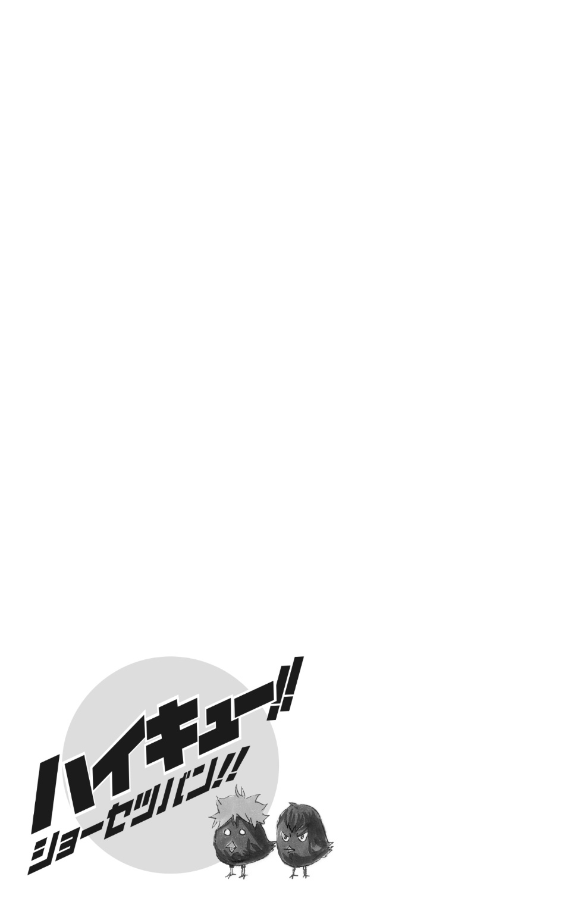
■初出
ハイキュー!! ショーセツバン!! Ⅳ それぞれの夏休み 書き下ろし
古舘春一
『ショーセツバン!!』も第四弾までやってきました。
本編は試合真っ最中で、しばらく日常モードにはならなそうなのでまたまた『ショーセツバン!!』で裏話をお楽しみください。
星希代子
『ハイキュー!! ショーセツバン!!』４巻です!!
本編では息つまる熱い試合が続いておりますが、『ショーセツバン!!』では、つかの間の夏休みをどうぞお楽しみください。
ジャンプジェイブックスDIGITAL
ハイキュー!! ショーセツバン!! Ⅳ それぞれの夏休み
著者 古舘春一／星希代子
© 2015 H.FURUDATE / K.HOSHI
２０１５年４月30日発行
この電子書籍は、ジャンプジェイブックス「ハイキュー!! ショーセツバン!! Ⅳ それぞれの夏休み」
２０１４年11月23日発行の第３刷を底本としています。
装丁 勝亦一己
編集協力 佐藤裕介［STICK-OUT］
発行者 鈴木晴彦
発行所 株式会社 集英社
〒１０１－８０５０
東京都千代田区一ツ橋２丁目５番10号
０３－３２３０－６０８０（読者係）
制作所 株式会社デジタルディレクターズ
本作品の全部また一部を無断で複製、転載、改竄、インターネット上に掲載すること、および有償無償に関わらず、本データを第三者に譲渡することを禁じます。なお個人利用の目的であっても、コピーガードを解除しての複製は、法律で禁じられています。